Things Are Complicating
We have new students, the first week one mainly to tell us how the classes are going to work and what to expect from the IB. But already, some things are wrong. Last chapter everyone had to pick their IB classes, but some people have the wrong classes. This is because there are certain limitations. People can't take Digital Society and Art, people can also not take Chemistry and Art, artists are really discriminated against as you can tell.
Anyways, the new students
WelcomeAlso an old student will come back
As the class starts their IB journey, things are about to get complicated.
-
01/08/2022
Timo goes to an abandoned neighbourhood and he finds some sort of ritual constructed with what he thinks are horse bones. He also find some other things.
.jpg)
.jpg)
.jpg)
.jpg)
.jpg)
.jpg)
.jpg)
.jpg)
Pictures taken by Timo of the area
-
First day of class
01/08/2022All classes introduced what the next 2 years will be like and what the group will be learning. Doug Murphy is the new principal of the school, and he seems to be incredibly exited, putting music and free pencils at the entrance, and giving a massive welcoming speach.
Interesting events- Dani missed the first 2 days
- Physics is the class with the largest amount of people
- Most people got confused with their schedule.
- Mr. Turner shows his students, his gigantic student debt
-
Second day of class
02/08/2022The B classes were introduced
Martina decides she might change to the other class's spanish. ToK and Spanish are at the same time, and one class is all boys except for Martina.
During Spanish class, everyone is tasked with writint about something that they like about taking the IB, something they don't like about taking the IB, and some question about the IB. Fede does this task. And then in the back of the paper he drew this and then he gave it to Timo

The Nabo pass informs anyone who obatins it that they are a Nabo, or that they were the main protagonist of a Nabo moment
Also, remember Josh? The guitarist? Yeah, hes gone. He didn't show up for any classes in the past two days. Students, and even teachers thought that he just missed the first days. This was a wrong assumption, Josh is gone and you will never hear from him again.
Farewell -
The first advisory 05/08/2022
The new advisory Teachers are Sylva, Mr.Foege, Ana, and Mr.Turner.
How unfortunately that the advisoriy teachers were swapped, Ms Coyle and Mr Zarsky where truly the best Advisory teachers one could have.
Also Lupinacci changed to Chemistry HL in case he wants to drop Math HL which is very demanding.
At the end of the day, Sebas asks Timo the reason of why he chose physics HL. Timo gives multiple reasons.
- He liked physics
- He wanted a challenge
- He had a dream where he was taking physics HL
- Martina was taking Physics HL
Sebas thought that Timo's answer wasn't interesting enouph. So Sebas won't tell Timo the reason he took physics HL. And thus no one knows Why Sebas took physics HL. Timo really wants to know though, he is really curious. Sebas gives him a couple of hints.
- Cheese
- The reason was created when Timo told Sebas that Timo would take Physics HL (I didn't really understand this one)
- The reason has nothing to do with the people
Then Timo then tells Sebas about the ritual that he found.
-
Monday 08/08/2022:
- After school activities Start
- Sebas immediately regretts not switching to Math AI SL since in Math AI the class does very little work compared to Math AA since the teachers are different
Alex wins all ping pong games in this week, all up until friday were Timo beats him in a quick match to 7
Nicole listens to music far to loudly on her airpods, literally the whole class can hear her music, she does so in every class, until the teacher gets annoyed and tells her to lower the volume.
Timo found 3 peruvean coins on the street, which he now uses to make decisions.

The Coins
At the end of the day, Sebas and Timo made a deal, if Timo showed Sebas the ritual, then Sebas would tell Timo the reason behind his decision for choosing physics HL. Physics is considered to be the hardest IB course. Math HL is probably harder but people that take Math HL are usually good at math so they don't find it that hard. Everyone finds physics hard though, so it's insane that someone as non-chalant as Sebas would take one of the hardest classes for no reason.
-
09/08/2022
Martina succesfully switched up Spanish and ToK
San showed that he can flip a coin in a way where it lands on the side he wants most times.
-
IB discussion 11/08/2022
Martina was really mad about the fact that she was not allowed to take Digital Society since she chose art and art and digital society are at the same time. Mili and Martina join a discord call and talk about it for a while, then Dani joins and then Timo joins.
Dani helps martina write the mail to Doug Murphy as they discuss how good the new principal is. After that Martina takes the 16 personalities test
Lucas and Lupi join, Lupi wants to do homework from biology with lucas, lucas told him to wait until he had taken a bath and eaten, so lupi deafens. Timo asks everyone how their day was.
Mili said it was nice, and then asked back, Timo said it was also nice.
Lucas said that he was tired because he always arrived at home late since he did so many sports.
Dani said it was stressing, since he didn't read Othello and he didn't like the idea of going to English class without having read the book, since he can't pull off quotations and does not know it that well
Martina said she was very mad about the fact she could not take digital society
After that the group started talking about different IB subjects, and Math came up, in which Dani showed the amount of homework that the Math AA HL people have, it was huge, they had more than 15 assigments. Then Dani says that Math AA HL people and Math AA SL people have a lot of beef, but Timo and Martina counter saying that Math AI SL and Math AA SL actually have more beef. And then everyone started fighting about which math class was better.
Mili and Dani believed Math AA was better while Timo and Martina believed Math AI was better, and Lucas was just there. Mili said that Sebas wanted to stay in Math AA, but Timo differed. Mili texted sebas, and sebas said that he was going to stay in Math AA, then Timo texted Sebas, he told Timo "I never said for how long".
Timo told Dani that Math AI taught you how to read between the lines and solve the problems more easily, thus it was more useful for physics, then Dani left.
Then Martina took many personality tests while Timo finished english homework, Martina retook the Hogwarts quiz which looked like fun, so Timo took it too. Martina got ravenclaw with an elephant patronus and Timo got Hufflepuff with a horse patronus.
Then Mati joined, said hi, and then left, and then both left
-
Wonderwall and Ping Pong
12/08/2022 What?So in the breaks, Sofe, Ethan, Alex, Ethan, Timo, Fede, and Sebas have been sitting together at lunch often. This is a new group different from the Table Tube Gang.
So everyone mentioned except Sofea and Ethan went to Alex's house to play super smash bros to Alex's house.
Then the contingent started playing mario kart while Alex and Timo went to play ping pong outside, Timo won many times against Alex. With one match being 3 to 21. This night time was approaching and Timo could see better in the dark than Alex.
Alex wanted to play doubles, but Timo once swore never to do that, ever since "the incident". Fede asked who hit Timo in the face with a paddle, Timo replied it was Martina.
After that, they went to Rudy where they started interogating Eitoku, this is very common for Fede to do by they way. They asked Eitoku who was the person that he liked the least from the class. Eitoku gave it much thought, there are no bad people in the class, so Eitoku doesn't dislike anyone, however the person that Eitoku likes the least is Dani just because he seems to be serious all the time.
Then they went back to Alex's house, they were planning to play Super Smash Bros but instead they watched the Minions movie while they answered Fede's questions.
The deep questionsTake into account that all of these answers are not really serious and they will definately change with the course of time. Also, at this point no one dislikes anyone (at least to my knowledge) this will also change int he future.
Who do least like in the class
Fede:Luca
Alex:Nicole
Timo:Bruno
Eitoku:Dani
Sebas:Nicole
Who do you like the most?
Fede:Didn't answer
Eitoku:Fede
Alex:Marina
Sebas:Eitoku
Timo:Sebas
Deepest regret
Timo:Being annoying in elementary
Alex:Being with a girl that was bad
Fede:6th and 7th grade
- I don't remember the rest.
Alex took Dani's OCEAN test, and got
Openness concientiousness Extraversion Agreeableness Neuroticism 33 2 46 65 46 The scores are lower than what Timo expected so he thinks Alex underestimates himself.After minions finished, Sebas invited everyone to his house the next day to his house.
-
Sebas Soap and Wonderwall
13/08/2022The WWC minus Ethan, Eitoku, and Sofea, went to Sebas house. They ate balls of flour with pork and it was actually pretty good. They also had corn.
They went outside and Timo started playing wonderwall with a guitar that Sebs had there
Wonderwall
Then Timo tried teaching Alex how to play wonderwall, but Alex gave up eventually. Then Sebas revealed that he had a gift for everyone, olive oil soap. It was amazing, it had the smell of olives. Then Timo started trying to learn how to speak french, Alex helped him to say "Airport" in french.
Then Sebs starts drinking beer, and the mother offers Timo some beer. Timo explains he shouldn't drink because of a medical condition and the mother says that Timo already looked drunk and that's why she offered.
Sebs and Timo then think of what to name their new group. They thought about naming it Wonder Weed Gang or something like that because of wonderwall, but Sebs proposed the word "Contingent" because it was a cool word. So the Wonder Weed Contingent. But then Timo renamed it to the Wander Warbler's Contingent because he liked the word Warbler. And thus the Wander Warbler's Contingent got it's name
-
14/08/2022 Martina proposes that everyone should do something next weekend, Timo, Mati, Lupi, and Chiara agree.
-
16/08/2022
Everyone plans the volleyball meeting at Martina's house, everyone putting their full name on a list. After that, Matias, Martina, and Mili complained about Coyle as a teacher.
-
17/08/2022
Timo made a bet with Sebas, there was a chemistry experiment in which they had a list of people's names and they had to find out who murdered someone by finding out chemical concentrations of stuff. Timo said that it was "Mr Green" and Sebas sait it was "Mr White". If Sebas won, Timo would give him one of his journals, if Timo won, Sebas would have to go to Martina's volleyball thing and also Dani's birthday (Sebas does not like to go to these Juntadas for some reason so this was a big deal) It was not Green or White, it was another random person so no one won anything
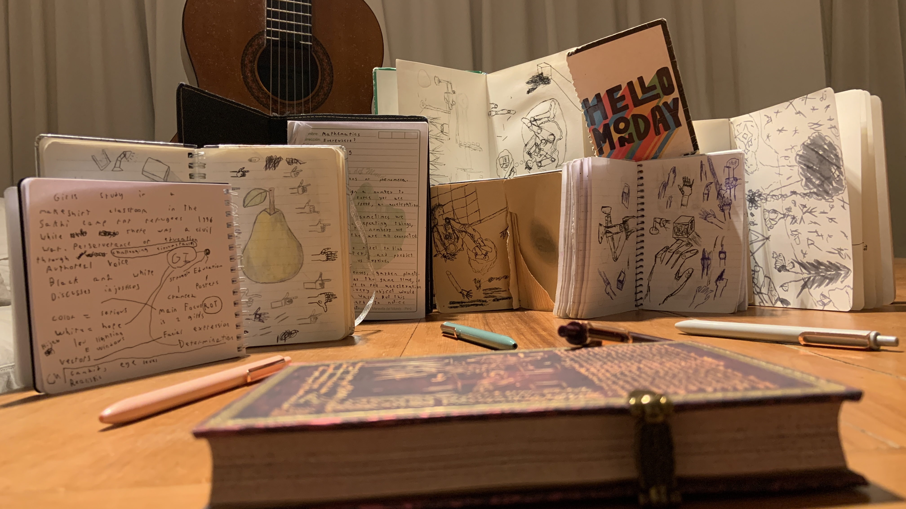Timo's Journals are used for drawing, note taking, reminders, and many other things. They are pretty much used for everything
Martina, Mati, Timo, and Mili talked in discord
-
18/08/2022
Coyle assigned 13 responses with integrated quotes. The class thought it was 13 PETER L paragraphs. Everyone got Ultra mad at coyle and they started talking bad about her.
-
19-20/08/2022
It is Dani's birthday, Dani does not like celebrating his birthday, however, Martina made a plan for everyone to go to her house to play volleyball at 5 which happened to be on the same day as Dani's birthday.
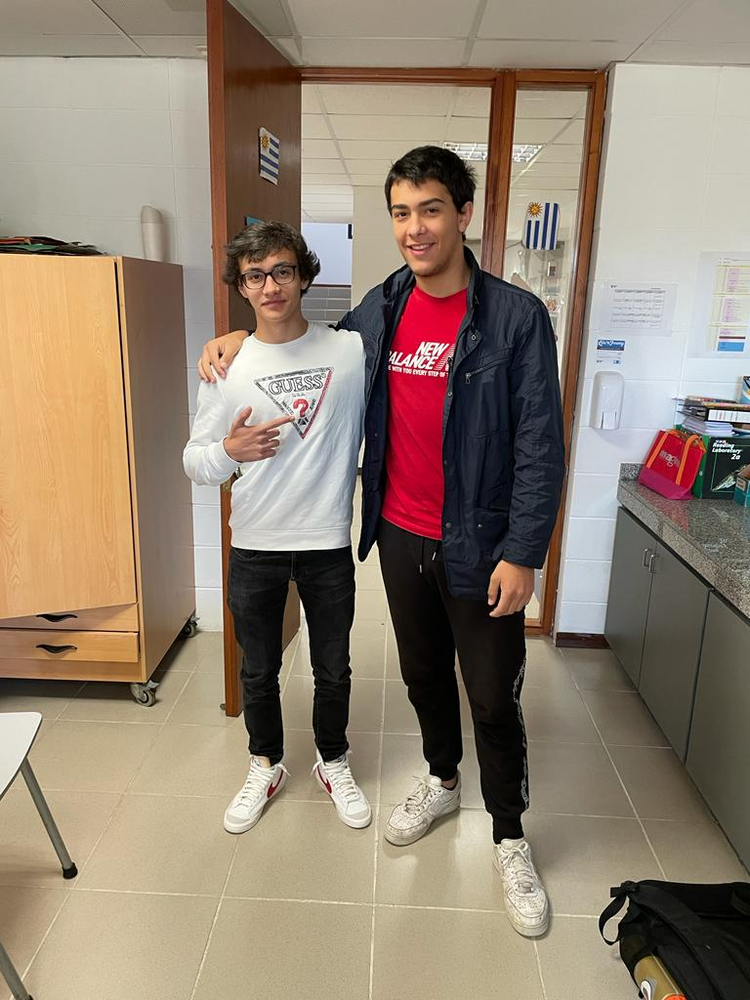Dani and San
Chiara's EPIC edit
Dani's Birthday is the same day as Jeff Granger's birthday, the PE Teacher(Jeff), so Dani went to his office in a break and ate food, because Jeff always has food.
Timo missed his prediction, but only barely, in the Original chemistry experiment, Mr.Green was the assasin, however Amaral changed the Document to make it Peacock, Timo tried to argue he was technically correct, but Sebass allowed no technicalities.
Timo tells Sebas that he has never lied, and lies of evasion don't count because Timo doesn not believe those are lies, those are secrets. Sebas is surprised and he promises Timo to never lie. Sebas then lies 2 seconds after to Santino about some physics homework. Turns out lying is deep within Sebas' nature, he can't get rid of it.
During advisory, Ethan asks Timo to tell him Sebas' Physics HL secret when Sebas reveals it. Timo does not agree to do this.
Dani's Birthday, Celebrated by Martina
The ones who attended Martina's Dani's birthday celebrationNikki(left after 20 minutes)
Martina brought Fede and Chiara to her home, where they talked in Martina's room. Martina brewed some tea with sugar in a green mug.
While Fede, Chiara, and Martina were talking, Timo was trying to find Martina's house in San Nicolas, until he eventually found it, when he arrived, they talked for a bit, Martina remarked that she did not want Eitoku to see a certain book in her desk. Everyone went outside and started preparing the volleyball and the football tennis net. The four started playing volleyball and people started arriving, Nikki, Angie, Eitoku, and Lupi arrived and they all played volleyball for a while, then Nikki left. Eitoku brought some Japanese food for everyone. There were some chocolate bars, some strange cheetos, and other things.
Eitoku was too hot, but he didn't want to take his hoodie off since he had nothing below it, so Martina lend him a T-Shirt from Jeff's 3x3. They played a volleyball match, It was Martina, Lupi, and Angie against Chiara, Fede, and Eitoku. Lupi's team won 10 to 5.
After that, everyone went inside to eat Ham & Cheese Sandwiches and Pizza. Ethan and Alex came while everyone was eating, then Salma and Mili came. Lupi found nerf guns, and he started a nerf war. But Martina didn't like the mess everyone was making. Martina decided that going to the park was a fantastic idea, and so everyone went to the park, but Timo was in the bathroom while this happened, so he got left in the house
As everyone was going to the park, they were talking about stuff when Timo came running to them. In the park, they played in the swings and the games there, while talking about random stuff. Salma hadn't been in the class for a very big time. Martina got a call from Lucas, who was lost so Alex, her, and Timo went to find Lucas.
After finding them, Alex and Martina went to Martina's house to recharge Martina's vape while Timo and Lucas went back to the park. Eitoku missed his dog from japan, so he stayed petting a dog that was there. Luca came and saw Timo walking towards the park, Luca thought he was lost, but Timo told him everyone was in the park, so the two of them went to the park.
Lupi asked Timo where Martina had gone, and Timo told them they went to reacharge Martina's vape with Alex, Lupi then decided to go with them, and he ran towards Martina's house, forgetting his jacket and his phone. Alex and Martina saw Lupi coming, and Lupi told them everyone was coming back, Lupi then realised forgot everything at the park, so he had to got to get everything back. Everyone went to Martina's house again.
After arriving at Martina's house, Dani arrived and rang the bell, they could see him in the screen.

Dani outside
And everyone decided to surprisie him. Everyone hid, and when Martina opened the door, everyone sang happy birthday to him as he made his way to the couch. Martina, Fede and Timo put a candle on some sort of cake, and then gave it to Dani, who ate the cake, but regretted it since it had carbs.
Everyone was talking in when suddenly, out of nowhere, Chiara starts counting, and everyone decides to play hide and seek.
.jpg)
Timo hiding in the sudden hide and seek(he didn't know that they were playing without a base)[I haven't figured out how to fix the lag in the video {And 2 years later, I figured it out, the lag is gone}]
Many things happened in this hide and seek.
Timo just hid behind the couch and came out because he thought he needed to touch the base to win. After being caught immediately, he went to get his medicine to Abril's house, which was nearby
Also Lupi was using the pogo stick
Pogo adventures
Alex and Lupi's little adventureLupi and Alex were quickly found upstairs by Chiara and Eitoku, everyone except Martina got found, Dani told Alex and Lupi that Martina, Ethan, Eitoku, and Sofea had climbed over the fence in the house, so Alex and Lupi did the only reasonable thing, and they climbed the fence. They saw something reflecting light and thought it could ahve been someone's phone, but it was just a piece of plastic. A they were going back, a dog and a cat appear, and they look like they are going to fight, suddenly the cat attacks very aggresively and the dog is getting destroyed, Lupi intervenes and ends the fight. Lupi then wants to go to the bathroom, so he goes to the bushes, but there was a camera, and a guard came, he was mad at Lupi for doing what he did. After that they went back to Martina's house
Turns out that Dani that Martina and Eitoku had gone to search for Timo in the park. Timo was in Abril's house, which was close to the park. They found Timo, and on the way back, they talked about the cold, and how Martina was cold, and wearing shorts. Then Eitoku got cold, and Timo suggested they learned how to breathe.
And Sofe and Ethan were just talking in the playroom, so no one knows who Dani saw climbing over the fence.
When Eitoku, Martina, and Timo, Alex and Lupi were still on their... adventure, everyone was playing cards with loud music in the living room, Eitoku and Timo went to Martina's room, Martina owned a guitar that she never used. Timo and Eitoku played the guitar, and then everyone else went to Martina's room. Martina got really nerveous and anxious since she did not want anyone to see the book that was in her desk. Chiara noticed this and made everyone leave, except some members of the WWC members + Martina. Apparently Martina was going to Japan with Eitoku, and everyone else thought it nice to join them. However Martina expressed how travelling with multiple people was annoying, a feeling only Fede seemed to understand
While they were talking about going to Japan, Alex and Lupi came back from their adventure, Lupi joined the boys, downstairs who had started a nerf war. Alex went upstairs were he saw Dani leaving Martina's room because of Chiara kicking everyone out, Dani then took of his shirt and started flexing his muscles to Alex in front of a mirror, right outside Martina's room. After that people started once again going inside Martina's room, then everyone went out for the last Time.
Alex played Football Tennis with some other people, while others were piggy back riding Lupi. Timo went with Ethan and Sofe to chat about random things.
But suddenly, Lupi urgently invities Timo outside of the room where Ethan and Sofe resided. Lupi guided him outside where everyone else was. Turns out they were all watching Ethan and Sofe talk, hoping that they would get together. Timo tried to inform them that Sofe had a boyfriend, but it wasn't very effective. Then he went inside were Dani and Alex were talking about life. Meanwhile at another part of the house some girls were talking different kinds of vapes and about beauty. People started joining the conversation. Chiara started talking about her dreams, apparently Chiara has really strange dreams including one dream where Martina was stalking her and like trying to kill her or something.
Then they talked about their biggest fear, Fede said it was really tight spaces, which Salma found incredibly stupid, saying she would have imagined something like "dying alone". Chiara said that it was stupid to be claustrophobic and that she liked being squished, most people found the comment weird, and she had to specify that she meant being squished by 2 people while sitting. Chiara said her biggest fear was being murdered in her sleep or getting sex traficked
Dani was asked what his biggest fear was, but Dani has no fear because he is the alpha male and the only thing an alpha male fear is fear itself.
After that all the girls left and Martina was alone the only girl left. Luca was annoyed that Mati found Luca's entire family in facebook, and that Santino was trying to sleep with his second cousin. Martina told everyone to "spill the tea" but Lupinacci countered saying that that boys don't have tea. Martina asked "what do boys do then"? you may be asking yourself the same question. Boys do pushups and planks apparently.
So Dani and Luca had a competition to see who could do a plank for longer, Dani won.
"LET'S FUCKING GOOOOOOOOO"-Dani at 2:51
Timo then went to check on Sofe and Ethan. Apparently Sofe's boyfriend sent a photo of himself with another girl on his shoulder. Sofe had been having a mental breakdown about this for the past 1 hour and 30 minutes, maybe she is a bit jealous. Ethan was quite tired of it. In retalliation Sofe sent his boyfriend a picture with Ethan and Timo. Turns out Timo happened to know the Sofe's boyfriend from a studying christian club that they used to go to.
After that, all the WWC members left, then Dani and Luca left, and Matias and Martina talked for a bit, until Mati left.
Timo forgot his hairbrush and Fede forgot his jacket
Warblers and Smash
The WWC minus Eitoku went to Fede's house for a sleepover.
They played Super Smash Bros, Timo had trained how to use the ice climbers, and he destroyed everyone most the time, then they went to sleep.
-
22/08/2022
Nicole came to school really tired and really cold
Martina gives the hairbrush to Timo and the jacket to Fede
Alex started a ping pong mathc winning 2-8 and then Timo made a come back and won 11-8, after that, Timo won 11-2 and 0-11, but couldn't count any of his wins since his phone broke, he told Alex to record seconds for him since he can't record seconds because his phone doesn't work.
In physics, the class starts the topic of kinematics, and Seba informs Timo that he had lied multiple times thus breaking the promise that he woudln't lie, but at least he was honest about it.
Timo gave a coin to Sebas because he messed up an equation in physics.
-
23/08/2022
Apparently, Students went to Gabriel Amaral the IB manager, Michele Werlin, and Maritte Mosckovicks to complain about the homework about 13 PETER L, and she got mad at the class for not asking her. The homework was not PETER L, it was just questions with integrated quotations. She spoke to the class in an angry tone, and then everyone accepted that they were wrong and moved on.
Also, Ethan's Birthday
-
24/08/2022
It is nostalgia day today, in UP class, Timo wonders how Nicole is capable of not drinking water, and surviving on orange juice
During lunch, Ethan takes some epic pictures of Sebas


 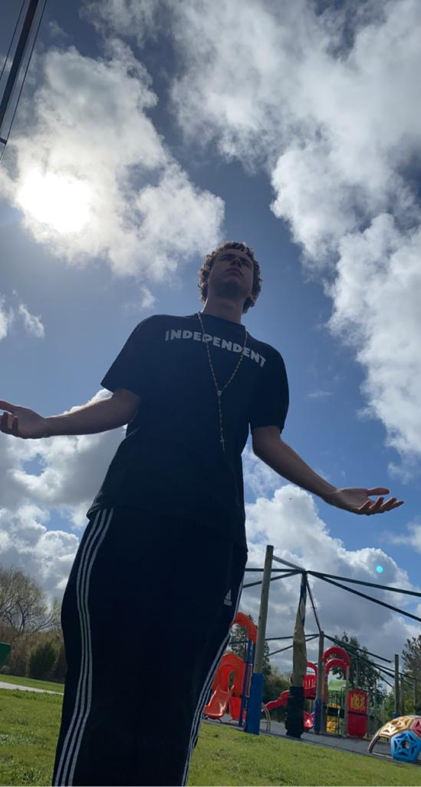
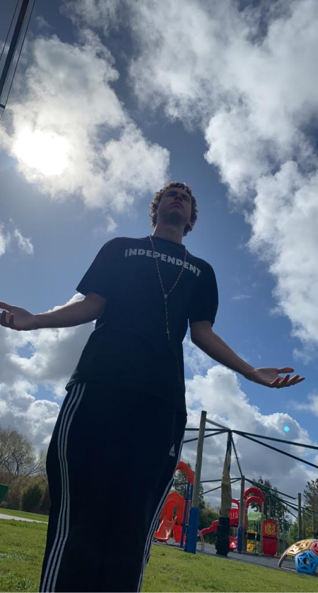
Sebs
During physics, williams starts the topic of projectile motion. Mr Williams then decided to insult the entire class with a definition about trajectories.
"When talking about trajectory we're talking about the path that something follows, so like your life trajectory is all headed down the drain" - Mr Williams
The WWC goes to Mercado Williman were they chat about many things. Eitoku tells Timo what clapping means to him. Apparently, Alex believes Eitoku likes Martina, and thus whenever Martina is around, Alex claps to taunt Eitoku about it.
Alex challenged Timo to figure out the secret meaning of clapping. Timo bet one of his Journals and Alex bet a piece of cake.
The WWC sings happy birthday to Alex, and then the entire Mercado Williman sings happy birthday to him. It's not Alex's birthday by the way.
Timo always records 1 second per day, specially when there is class that day. He plans to put all the seconds together by the end to make an epic montage of the IB experience. He often asks people to send him videos that he can use for these seconds. Alex was tasked with recording one second and he forgot.
Alex is also worried about what THE JOKE since he fears it's something dangerous. Timo assures him this is not the case.
They ate ice-cream and other food.
They left and then they played super smash bros for a bit

The WWC
-
25/08/2022
Sebas tells a joke that I came up with during history class. Except he is mean to say Argentina in the first part instead of Buenos Aires. This was actually a StuCo event for telling jokes, Sebs did not win unfortunately.
Sebas steals my joke
-
26/08/2022
So clapping is a way to mock Eitoku about liking Martina. However Eitoku always says he doesn't like Martina. I think it's because they were once trying to catch a mosquito in a bus or something and they were clapping? I am not sure though. Anyways Timo figured it out so now Alex owes him cake. Eitoku gets annoyed by people clapping very easily.
In advisory, they talk about the field trip to pan de azucar.
In Math, Martina claims to be learning french, Salma disagrees with this, saying that Martina knows italian not french. Then Sebas and Timo talk about languages for the rest of the class, Sebas started following him on duolingo.
In the last class, spanish, Dani stole Timo's diary and read, "Alex won't be clapping today" and Dani is confused so Timo explained how clapping was a way of mokcing Eitoku and all of that, but Martina wasn't here today so Alex wouldn't clap. Ethan heard something and he got curious but Timo didn't want to explain everything all over again. So Ethan asked Alex and Alex gave him so very very not subtle hints, so Ethan immediately understood what clapping means.
After that Mili, Eitoku, Chiara, and angie, and maybe someone else that I don't remember do something [EDIT: I am an idiot I actually wrote this and now I don't remember what the hell they did].
-
27/08/2022
Alex plays ping pong against Lupi.
Alex vs Lupi
The Warblers go to Timo's house and play Super Smahs Bros and also study for physics, Timo also gave a room tour of his various objects. Timo wanted to take Sebas to the ritual, but he could'nt since they did not have time.
In the groupchat, Mili asks when the UP test is. Lucas responds with the question "Can you read?"(Because the information that Mili was searching for is in google classroom) Then everyone makes fun of Mili for like 30 minutes.
Alex, Sebas, and Timo try to create art by burning wood with magnyfying glasses, but it's too cloudy so they couldn't do anything.

Timo takes this amazing picture of Alex the detective.
Fede also makes everyone take some tests about random things. One test concluded that Alex was more gay than Fede.
-
29/08/2022s
The UP class had a test, and in TOK, everyone was lauphing at Mili for asking the groupchat for answers instead of checking google classroom, while Timo tried defending her.
In chemistry, Timo tried convincing Sebas to tell him the Physics Secret by trying to trade it for his predictions but Sebas refused, saying he would only give Timo the secret when he saw the ritual.
Martina said she would join a chearleading team that would be created by Chiara, Timo considers joining.
Sebas pouring distilled water flawlessly and elegantly into a cubet
Martina then tells Timo that she is trying to prove to Eitoku that she is worst than him at Vollayball, and so they are going to compete, to see who is the worst at volleyball. But they ended up doing a bottle flip challenge, which Martina lost. So I guess she is the worst.
-
30/08/2022
In ping pong, Chad was absolutely destroying everyone, then Timo won, then Alex won and then he started destroying everyione.
At the break there was a Chocolate Bake sale at break.
-
31/08/2022
The physics class had their first test about measurements and uncertainties, everyone did terribly and everyone is really scared for their future in the physics class. Except Luca he did pretty good.
Chiara suggests that everyone can go to her house in friday to hang out.
-
01/09/2022
In math class, Sebass, Timo, Eitoku, and Sofe talk all class since Zarsky is not there to teach anything. So Martina, Eitoku, and Timo do some duolingo in japanese.
Sofe suggests that they could do something on friday since it is a half day, they decide to go to portones and eat something there on the friday half day.
Then the Wine and Cheese happened, an event where parents and Teachers come and talk to each other while eating wine and cheese. The parents sometimes bring their kids, so high school and middle school students have to baby-sit them.
Chiara, Salma, Eitoku, Mati, and Fede came. And Chiara brought his brother, Tiago, who is really hyperactive. Eitoku and Timo showed each other their guitar, piano, and trumpet skills. Martina came, and joined by Chiara, they went to the music room.
They played some songs, then Eitoky was called by his dad, and Martina and Timo met Eitoku's dad, after that they all ate burritos with chips while talking about Tiago's hyperactivity
After that many people left with Salma's mom. Tiago learned to play ping pong, and tomorrow it's Alexia's birthday.
The WWC makes a plan to hang out on friday
-
02/09/2022
The portones warblers
When the half day ended, the WWC minus fede, alex, and sebas went to portones shopping. While going there, Eitoku asked Timo about Dani, Timo said that Dani was an interesting person who always overanalysed everything. Dani might seem cold hearted but he is a good person, he just hates to show it. Dani likes helping others which is proof that he is good. Fede, Alex, and Chad had NHS.
After they ate, Ethan said that Dani was a very bad person and that he hated him because he is conceited and racist and a mysoginist bitch. Timo tried to defend him but he failed. Ethan actually hates Dani a lot.
Ethan's opinions on daniOnce upon a time, Ethan and Dani were on a History grou project together with Mr Foege as the teacher. Ethan already had his doubts about Dani and the jokes he made. They needed to do a presentation together. Dani "didn't do shit"(-Ethan) and he sent an apologising gmail to Ethan saying that he was sorry for leaving Ethan to do 90% of the work (Ethan hated this part specially because apparently Dani actually did nothing, not even 10% of the work). Dani added that he had other more important things to do and he couldn't focus on History. Now Ethan also had some very important things to do, so he got extremely mad at Dani for trying to make an excuse for not doing anything.
After this, Ethan always saw Dani with a negative light. All of Danis strange jokes and comments on women and stuff like that landed terribly with Ethan. In Ethan's defense, Dani has a very unique way of expressing his thoughts, and his thoughts are also pretty unique too. Also Dani can sometimes dismiss people's opinions simply because he doesn't consider them smart.
What Ethan hates of Dani- Doesn't care about others
- Conceited
- He is sexist, mysoginist, many of the ist's (This one is debatable)
But Ethan still jokes with him and pretends everything is fine.
After that they talk about Lore. Ethan establishes that in the lore. He wants to be an artist that is searching for the ultimate art piece. They start talking about art, debating which art is the best. It's mainly between Music and Drawing.
After that, they talked about their social life, Sofe is going to an art exhibit with his boyfriend, Ethan said he had no social life, and Eitoku said that he is going to go to Martina's house with Angie and Mili.
After that, Ethan and Sofe left, and while Eitoku and Timo sat down and waited. They talked about music, and the songs that they made and the different instruments they knew. Eitoku said he wished that IB had Music. Also Eitoku started playing the cuatro before the guitar which is a pretty interesting instrument with four thick strings that resembles a stranger base.
After that Eitoku went to Martina's house to hang out and Timo went to Arocena
Chiara's Thing
Timo and Chiara talk about school, the IB, physics, biology, and psychology. So the bio class had a test that was pretty touph. Then chiara mad some waffles to eat and her dog started barking. Mili, Martina, Angie, and Eitoku arrive.
The girls styled Eitoku's hair (badly) while Chiara and Timo had a sword fight with a sword and it's sheath (plastic sword obviously). This was all happning in Chiara's room. Chiara won and Eitoku did not like what the girls did with his hair. After that Ethan came, who expected Chiara's room to be more pink. Chiara is always talking about the colour pink and how it's her favourite colour, however she argued that people don't eat their favourite food every day.
After that all of them went down a suspicious and slow elevator that took them to the fun part of the house, complete with alcoholic beverages, cars, trophies, and a pool table. They talked there for a while, and then Angie and Salma arrived. Then, Dani and Luca arrived. They went down to the fun part of the house, although Dani did not trust the elevator, and so decided to go throught the alternative longer route.
Dani then decided to play pool, and Martina fell asleep in a couch. Dani and Luca vs Ethan and Angie, Angie turned out to be really good at pool, and Dani turned out to be really bad, and so Angie and Ethan won. Mili left, saying that she would come back
After that, everyone went upstairs to eat pizza when Alex and Fede arrived they talked about the immposible physics test and then Chad arrived, everyone was really hype for Chad, he is a really cool guy. Then Lupi came.
After that everyone went down to play pool once again, This time, it was Timo and Eitoku vs Ethan and Luca. Eitoku got a streak were he scored like 5 balls in a row, and then he pulled of a move that can only be described as very good. So Luca an Ethan gave up.
After that Lupi and Martina vs Chad and Alex, Chad and Alex started off winning, however Lupinacci and Martina took it over, but then Chad and Alex caught up to them so Martina and Lupi lost.
After that it was Martina and Lupi vs Ethan and Luca, however in the middle of the game, Martina got drunk and high and decided not to play anymore, being replaced by Timo. Timo and Lupi managed to win. Then Mati arrived
After that Eitoku and Timo went up agains't Chad and Alex, Chad and Alex started winning by a lot, and then they spent 1.5 hours trying to win until Eitoku and Timo catched up. While the very big game was happening, Alex wanted to teach eitoku how to tie his shoes really fast, Martina learned how to do it much quicker than Eitoku, and then she became even faster than Alex. Take into account Martina was also really drunk right now. Timo set up a trap where the 8-ball was really close to a hole, and Alex scored the 8-ball in the hole making him and Chad lose.
Alex struggling to get the 15-ball into the hole against Timo and Eitoku and Dani struggling

Alex Teaching everyone how to tie their show laces real quick. (Martina became so good at it, she beat Alex twice)
After that, the they started asking deep questions, one of which was "What turns you on?" which Timo and Fede lauphed at. This is because Fede once asked Alex this question and Alex answered "Chocolate" which Fede found funny.
Then people started leaving, and that is all.
-
Fede apparently forgot his ring and his jacket, and timo forgot his sweater.
Turner talks about his debt
Dani tries to immitate Mr.Turner's language in TOK, which is very articulate, eloquent, and unique, using very interesting words.
Mr Turner posts a question assigment on google classroom and everyone must answer it. Dani aswered this question vaguely with a sentence fragment and a grammatical error. So everyone corrected his comment. Then Santino copy and pasted a summary of a different short story.
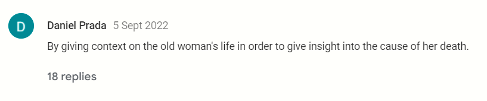
 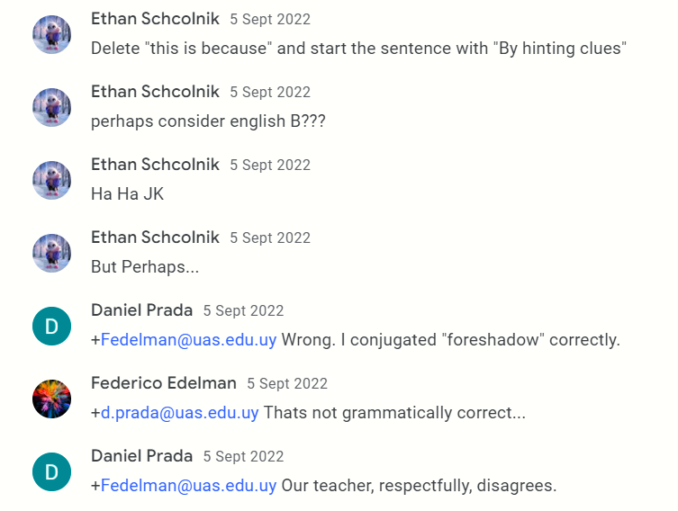
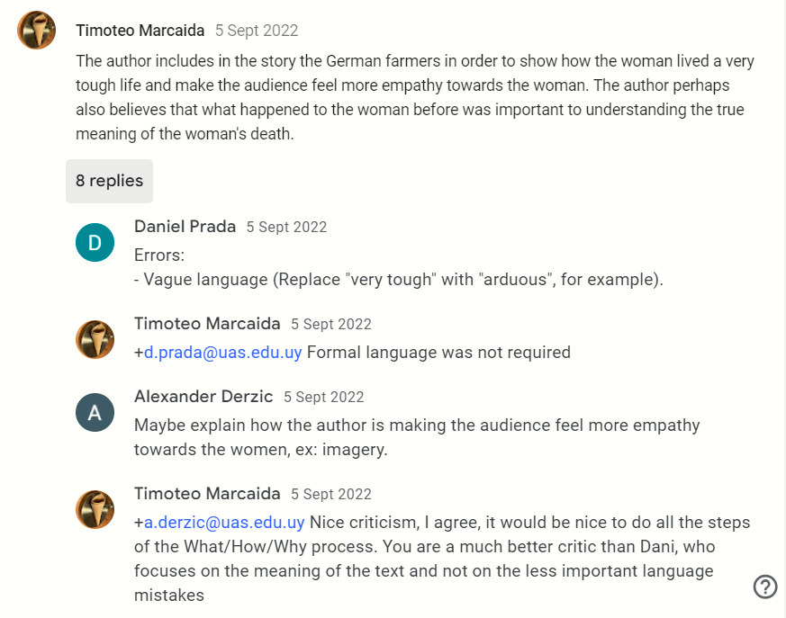
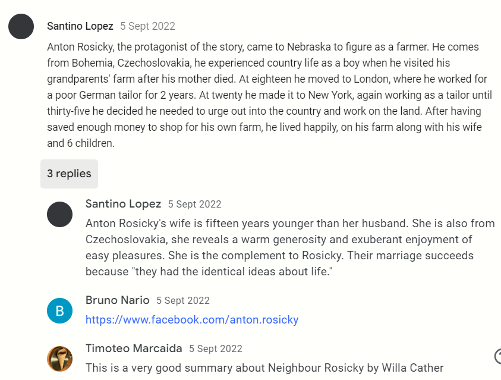
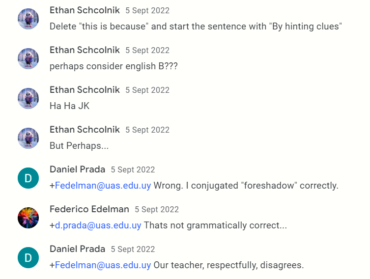
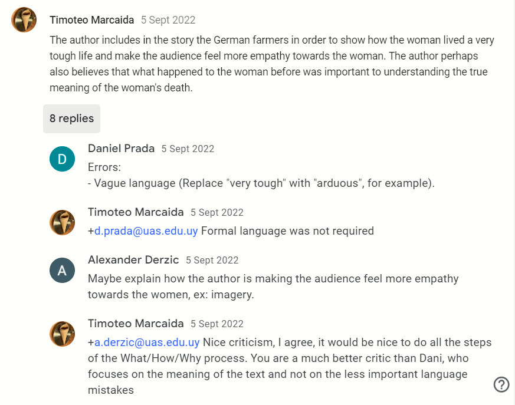
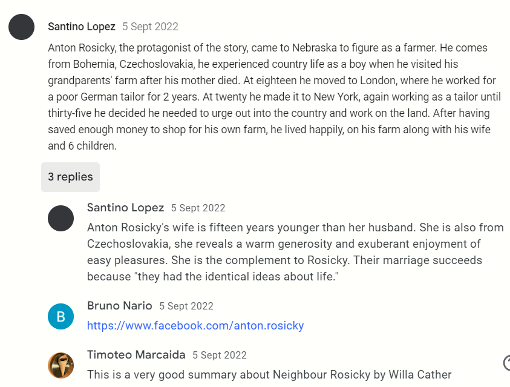
 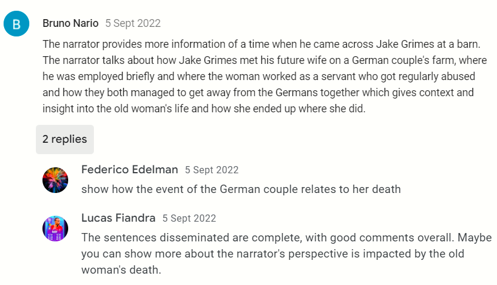
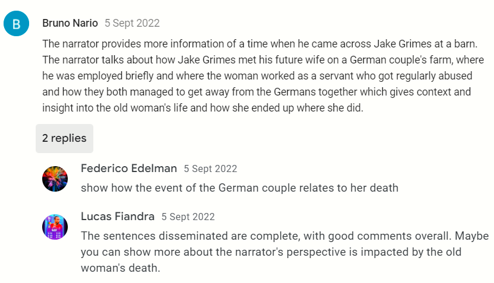
"The sentences disseminated are complete" - Lucas
"perhaps consider english B???" - Ethan
Timo shares a physics document in which everyone can write notes and study.
-
A complex camp
07/09/2022Summary:The class goes on a trip to Piedra Mora and a zone of wildlife around the Cerro pan de azucar in order to learn more about the nature in Uruguay.

Piedra Mora
The beginningAt school, everyone is there, Ethan and Martina did not bring their guitar, going against Eitoku and TImo. Timo forgot his towel and Mati forgot his sleeping bag, once in the bus, some sleep, some listen to music, some talk. But after a while the class arrives upon a gas station where they go to the bathroom and stock up in consumables before the first adventure.
Sylvia collects phones, some don't give it to her, Timo gives Sylvia a non-functional phone, not knowing he had his actual phone in his back pack.
They go to a cerro, and Friolla introduces herself as the guide, along with, the veterinarian, they both warn the young adventurers of dangerous snakes capable of causing trouble, then they give the group some food like popcorn, cheese chips that taste terribly, one jar of nuts, and fruit.


The arrive
The journey starts and 5 minutes in, Martina is already regretting every life choice that lead her to this moment. She says she is too tired to continue. Timo and Eitoku are perfectly fine, but all 3 are really behind and should probably run to catch up, but they don't
So they arrive late to an explanation of tree clusters, random clusters of various species of trees, one of which is really allergic. There is a type of tree that if Chiara touches she dies but I don't remember the name (It's because she is allergic to something in the trees). The group is tasked with identifying every type of tree in the cluster, no one actually does the task because no one knows anything, except maybe Fede. So they move on.
They climb a portion of the hill to arrive at a ravine with water.They leave their bags in a clearing and go down the ravine in order to taste nature's life-giving juices (Water). Martina challenged Timo to a race down to the entrance of the ravine, Timo accepted. Due to the inclination of the terrain, Timo won since his longer legs allowed him to travel a larger distance with every step in an inclined plane, and Martina is short. In the ravine Alex falls, because he was not paying attention at the slippery, wet, mossy rock.
After some nice fresh water in everyone's system, the team comes back out of the ravine, and eats the empanada's that the guides gave them, Ethan can't eat ham, so Timo trades him the ham empanada for a chicken one.


Everyone eats empanadas while talking
After that, they ascend the hill, to a place that has a sign which warns the class about the zone being inhabited by extraterrestrial being and there are high chances of alien abduction. Timo builds some stone structures while Dani and Lupi do an amazing job at absolutely destroying Timo's structures.
 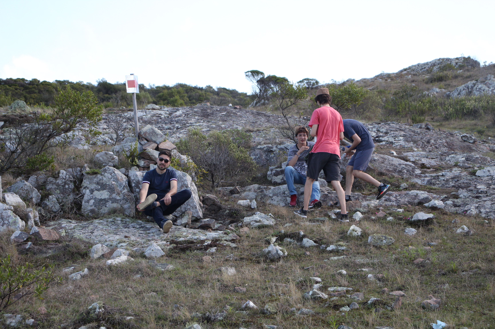
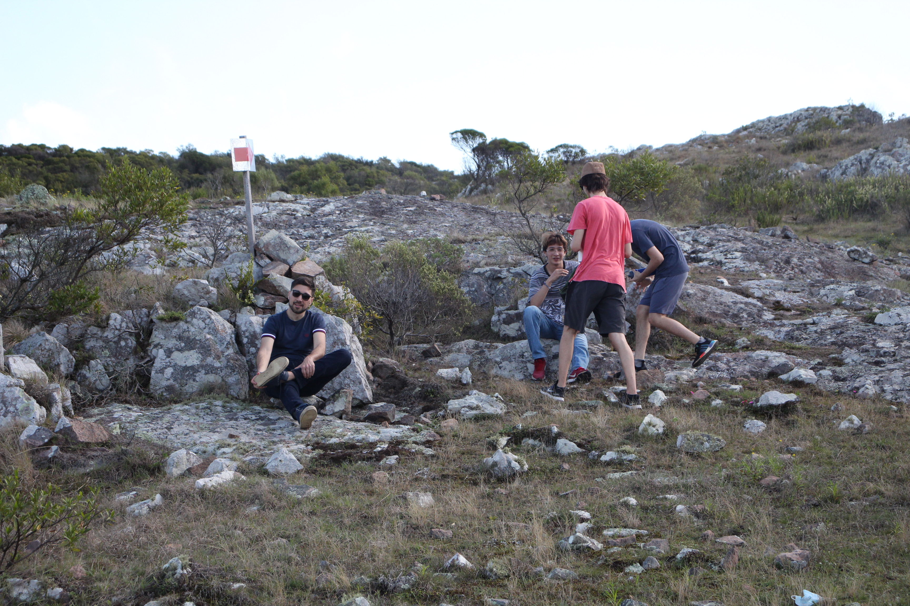


The abduction zone
The expert geologist guide informs the team that they are standing on igneous rock that came to the surface because the earth was blown away by the wind.

Also Alex still can't handwhistle, this is him trying
On they way down, Martina loses her love stone (A stone she has in her collar) but she finds in her bra. Mati and Lupi take cool pictures in sunglasses. Timo also lost his back pack but he recovered it from the Alien abduction zone.
Now with no missing items, the adventurers go down, this Time, instead of drinking the water, they are planning to bathe in it, Dani takes of his shirt to show everyone his alpha-male physique. Lupi, Mati, San, Nikki, and others also go to the water. Lucas jumps in with his clothes. The water was cold and San destroyed his foot against a rock.


Daniel flexing his incredible muscles and everyone else in the water, and also Chad, Sebs, and Alex who didn't go to the water
Then everyone got out, complimenting Dani and Lupi on their bodies. Then everyone goes down the hill. Martina is absolutely exhausted from the climb, even having to stop walking because she feels she could not possibly walk another step. Timo jokingly asks her if she wants to race again ( expecting an exhausted "no" as an answer) but Martina instead responded by drawing energy from the sun and running as fast as she possibly could towards Salma (Salma was picked as the finishline) and she won and then she died.
After that, Timo raced Eitoku to the bus. But Timo stopped halfway because he was carrying a back pack.
The team went to the bus and headed to the incrdible Piedra Mora, the place where the cabins are located
Piedra Mora
The girls have their cabin, the boys have their cabin, and the WWC also has their own cabin, but also Chad is in the WWC cabin. This can happen because Sofe is currently suffering from an infirmity and thus she couldn't come. Sofe is the only girl in the WWC which means that all the WWC members in the camp got a cabbin for themselves, and also Chad joined them. After spending some time talking and playing ping pong, everyone joins a soccer match in whitch Lupi, Luca, Timo, and Mati score enouph goals to win a match. The teachers were also playing, and at one point, Turner charged towards his opponent's goal with the ball, but he started to fumble and tumble untill he fell very epicly and it was really funny.
Then the merienda comes, and everyone eats. They have bread with dulce de leche and also Alex's favourite drink. Chocolate Milk
Then they have free time, during the free time, everyone is allowed to do anything, like ping pong, and more.
From now on, the Girl's Cabin is Gcab, the Boy's Cabin is Bcab, and the Wonder Warblers Contingent Cabin is the Wcab
Martina spends a lot of time in the Wcab, she claims she has no fun in the Gcab. Ethan theorises that Martina actually spends more time in Wcab because she is infatuated with Eitoku, Timo believes that Martina is actually in love with Eitoku and not just infatuated.
Then dinner
And then, a game is played, 4 teams are made randomly, and they have to find the guides who are making animal sounds that the group should be capable of recognising. Turner is incredibly hard to find.
Mr.Turner felt bad that Sebas past right in front of him and did not notice so he revealed himseslf and the red team won.
Another game was played, where the team had to get inside a circle without getting spotted by Mr.Turner with a flash light, the game is as hard as its sounds and everyone got mad at how hard the game was. The only one who got in was Martina who used Timo's military flash light in strobe light mode to flash the teachers, blinding them to the point where they couldn't recognise who was getting inside the circle. This strategy was then banned since that flash light is actually really bright and no one else got it. Others tried to use their jackets to cover themselves, and also switch up their clothes, but nothing worked because the teachers just started guessing names until they guessed correctly.
Then they made a campfire where Eitoku and Timo played wonderwall. Then Ethan, Timo, and Turner Talk about dreams and predictions, apparently Timo is not the only one with predictions Turner has them too


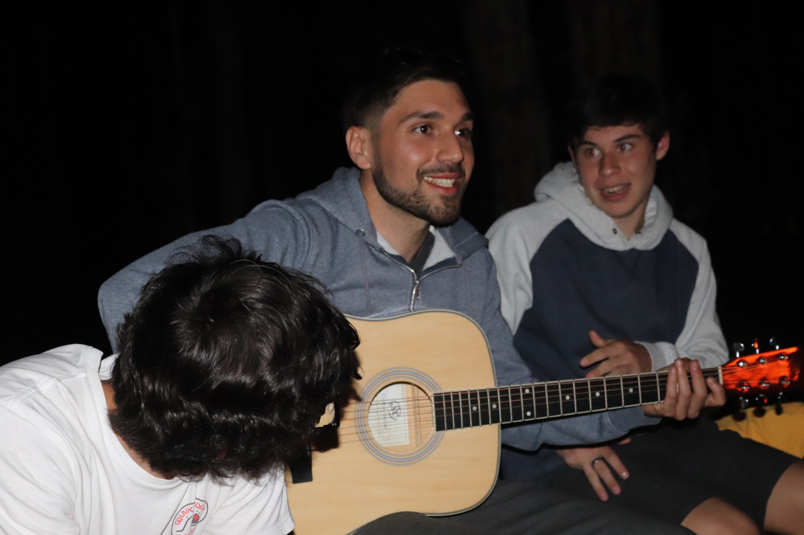 Rodri played the guitar too but no one knew his songs
Then some play ping pong some go to sleep, and some talk in the campfire, Timo loses his pick, his guitar, and his flashlight, but finds everything with the help of Sebas, Alex, and Marinta.
And then everyone talks in their own cabin for a bit. The WWC agrees that they are going to keep everything in their cabin clean. They will leave their shoes at the entrance and they would spray the place with some spray that I think Alex or someone had. Their cabin was the most pleasent, (The girl's cabin had the smell of vape which I didn't like)
Timo and Sebas discuss death, apparently both are really scared of death and not knowing what come after. Ethan joins the talk, for a while and then he draws something on one of Timo's physical Journal
-
A Complex Camp 2
08/09/2022Some kids from a nearby Rural show up, and the class introduces itself while teaching them some words in foreign. After that, the guides anounced that the class would have to do activities with the kids, Timo was wearing a hat with a neck flap that Martina stole from him 3 times. They played an activity where they have to identify plants in order to find papers that allow them to do a challenge, like volleyball, jumping rope, and other things. There was a kid called, Gael, who was really mean and was acting really innapropiately towards the girls of his class.

 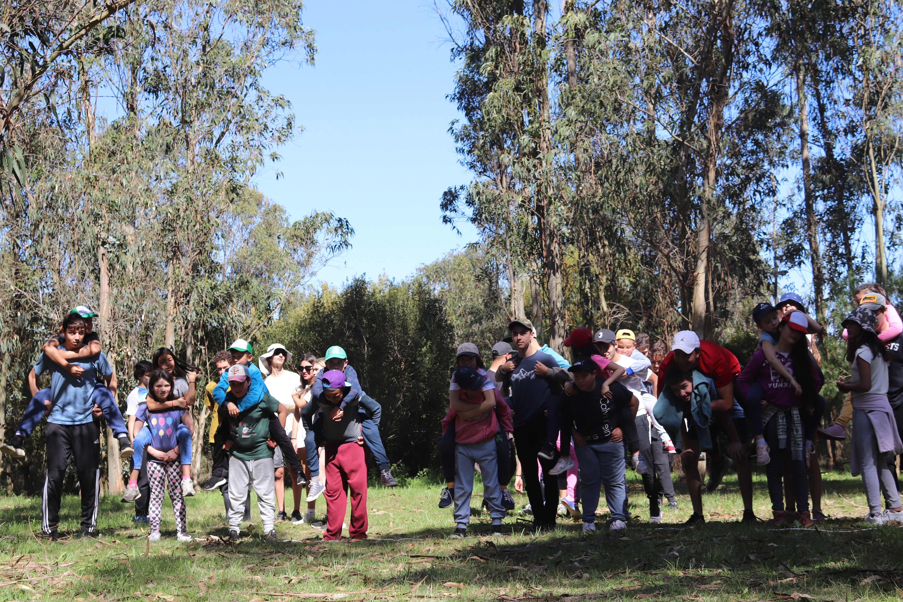
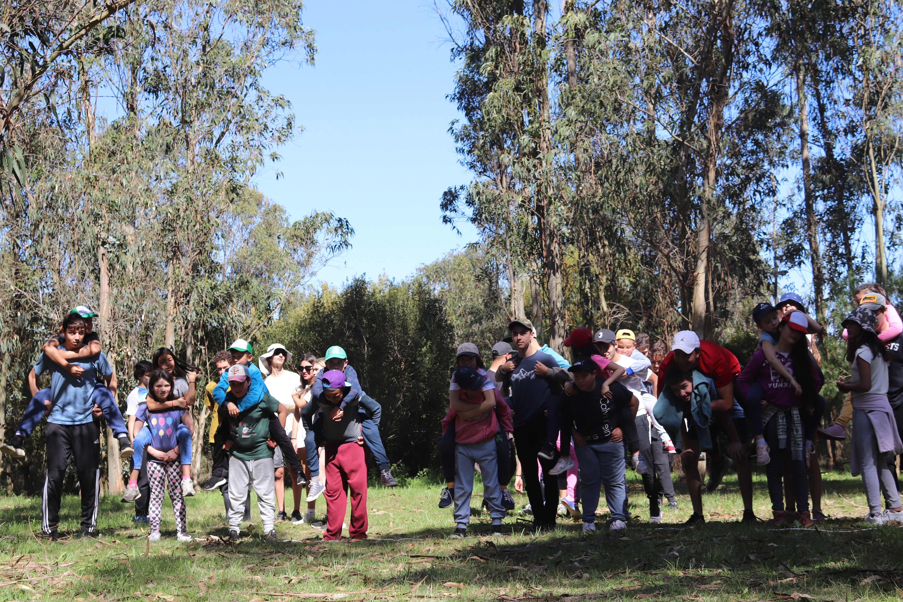


The kids, the class, and the games
After those activities, the class along with the rural school kids, had lunch together, and they ate Chivito and other things that the kids cultivated themselves. Timo and Martina had a staring contest which Timo lost.
Then the WWC + Chad sing Happy Birthday to Alex, and everyone including the kids sing him happy birthday too, this time it actually is his birthday though.
The kids lost the ping pong ball, and Alex, Rodrigo, and Chad were all really mad that they were unable to play ping pong, but luckily, Timo had brought a ping pong ball. Then he gave it to the ping pong squad and they played for a long time.
Meanwhile, the Bcabin was struggling because everything was flooded, dirty, and smelled terribly, the Gcabin was vaping, with phones, and talking about gossip and tea.
In the Gcabin, Martina was talking with everyone, while Timo decided to go to sleep, when he woke up everyone was leaving to somewhere quite cool.
The reserve.The class went to a reserve that was maintained by the guides. It had a mudhouse, and wilderness, Sebas and Timo found great walking sticks. The group ate some sandwiches and then got split into 2, and they set up 2 motion activated cameras, one per group. They met up in a river and they had to get to the other side in order to get to a river-made labyrinth.

They eat sandwiches and oranges
Sebas gave his walking stick to San, San then gave it to Lupi, and Lupi left it in the river. Some people crossed the river, Martina was the only girl that dared, Nice one Martina. Everyone in the labyrinth found their way to a clearing, except for Timo, whom Alex and Ethan followed. Timo got to a dead end, but dead ends are only a mindset, so Timo made his own path by destroying the vegetation wall and he got to the clearing.


Some of the ones that went into the labyrinth

The camera trap
On the way back to the mud place, Timo took the camera, and took some pictures, none were good, but he liked the experience. And Martina stole Timo's hat and gave it to Lupi.


They are going back
After that, the Adventurers drank Alex's favourite drink, chocolate milk and ate alfajores, then they went back, where Lupi apologised to Sebas for leaving the good walking stick begins behind. Sebas says that he will see Lupi as his stick from now on. Then everyone starts trying to catch frogs Sebas then asks Timo what he thinks of Eitoku and Martina. He responds that he is jealous of Martina and how she always "steals" Eitoku from them. Timo makes the joke that they should get rid of the competition, Sebs disagrees witht the violent approach.
Also Martina was throwing rocks at at people. In one occassion Fede asked her to stop


Frogs Frogs Frogs Frogs Frogs
Then they went back to piedra mora, where Timo, Lupi, Rodrigo, Alex, and Chad played ping pong for a while. Then Martina and Timo come to Wcabin where Timo teaches Martina some of the guitar chords. Then they go to Gcabin, where all the girls are using their vapes and their phones, they always locked the door and closed all curtains to assure that no teacher could find out they had illegal OEE items. Also, Nicole rested her head on Lupi's lap and everyone found that strange.
Then, Timo tries to teach Wonderwall to Mati, but Mati gives up really quickly.
After that, the boys have the amazing idea to go to the pool, but a storm comes and they get scared of the lightning. They go back to their cabin, but they are all all wet and muddy so they make a disaster in the cabin. This only happens in the boy's cabin though, so Bcabin is all muddy and dirty.
-
A Complex Camp 3
09/09/2022The Team wakes up and eats breakfast, Alex's favourite drink, and bread with milk caramel, then goes to a zoo. In the zoo, the team sees ñandus and capibaras.
The group split, and they saw different animals native to uruguay, except jabalis thos don't belong here.


The zoo experience


Some more photos
After seeing the animals, theys prepare to go back to piedra mora. They go back in a truck and Sebs talks to Timo about the Korean war. Alex, Lupi, Chad, and Rodrigo play ping pong.


Martina Eitoku and Sebs Chad in a truck
Then they went to a reptile enclosure where everyone got to handle a snake.


They handle snake that Chiara named Chiara


More reptiles that where in the inside After that, they once again come back to piedra mora. In the girls cabin, some people are talking, including Martina, Mati, and Timo, Timo notices Martina, Mati, and CHiara leaving, and so he leave with them to the Wcabin. It turns out, that both don't like how Nicole and Lupi were acting the other day (Nicole had her head on Lupi's), Martina says she does not like Nicole's attitude towards boys, and Mati says that Nicole is allowed to do whatever she wants, and that the real problem is that Lupi let her rest her head.
Everyone but Martina goes back to the Gcabin to investigate. Everyone talks about random things, until Dani asks a very strange and extraneous and interesting question that he had apparently asked before. However this question was expressed as a euphemism
"How big is your wall?"
The question was directed to girls. But no one really understood what Dani meant. Dani kept saying that everyone knew what he meant but they seriously had no idea (At least I had no idea). Then Dani decided to use no Euphemisms, these are Dani's words verbatim
"The distance between the entrance of your pussy and your womb."
No one replied with an actual answer because of the complete absurdity and innapropiateness of the question. Then they started talking about beauty, where Dani was asked "What do you look for in a girl?" he responded with "Everything" and then proceeds to explain to everyone a metaphor of a cake that represents the woman's body (This can't ger worse can it?). Again, in Dani's words verbatim
"The ass is the base of the cake and the breasts are the frosting"
And with that, Timo could no longer tolerate Dani so he left. He went to the Wcabin where Ethan, Alex, and Martina were talking, and he told them that Dani had just asked the most insane question. Reasonably, everyone begged Timo to tell them what the question was, but Timo was too embarassed to do it, so after a lot of insisting, Timo flipped a coin to decide. The coin said yes. Timo told them the euphemism "How big is your wall" which no one understood the true meaning of.
They once again begged Timo to explain what the hell does that mean, so he flipped another coin, and the coin told Timo yes again. However Timo was too embarassed to say it, so he wrote it on his diary and gave the paper to Alex, who read it out loud. And to everyone's surprise, Martina had already heard this question from Dani, he had texted her that question, and other similar questions before. So everyoen is kind of weirded out by Dani's question and no one can quite figure out his reasoning or why he would ask such an innapropiate question. San arrives and gives his opinions on Dani, which is in line with everyone else's
Meanwhile, Sylvia goes into the Gcabin, and eveyone hides their forbidden items, Sylvia somehow does not notice the intense vape odour and simply tells everyone to go to the dining room. Before they go, Timo gives Martina a little white ball with a strange symbol.
After that, Mr Turner plans to do some slow shutter speed photography art, but is interrupted by the rain. Still he managed to do something.

UAS written with flashlights in low shutter speed.
Everyone arrives at the dining room, the WWC+Chad create the game called whitejack. It's a game and the only rule is that if you have the joker card you can add a rule. Here are all the rules so far.
- If you have the joker card, you can add a rule
- Play the game like Uno but you have to say Whitejack when you place the last card
- Chad always start, if no Chads are present, the name closest to Chad starts.
- The last card placed has to be plus or minus 1 number away from the card in the pile. It can't be exactly the same number
- When you have 2 cards, say "Blackjack" before your turn ends
- When you have 1 card, say "UNO" before your turn ends
- When you get a card with a person, switch your cards with the person to your left.
- You can say "Adjourn" and leave the game, giving your cards to someone else of your choosing, however the next time that you play the game you have to do 20 push ups.
- When you have 10 cards, you automatically give 8 to any person you want to
Then everyone plays minute games, games tha have to do with 1 minute, everyone
The games/challenges- Keep two balloons up in the air for more han a minute
- Have 6 dice roll the same side in one minute
- Throw as many mikado sticks and catch them in less than a minute
- Take a rubber band out of your right hand only using your right hand in less than a minute.


Chiara plays the dice game
Everyone then plays mafia, the first round ends quickly, with Chiara and Rodrigo being voted out, the second one is more itneresting. Lupi was the detective, the first mafia got discovered right away. But the second was unkown. They were in the finals. Chad, Mili, Lupi, Timo and Turner are still standing. Lupi is the detective, he knows who is the killer, Lupi says it's Turner, but Mili says she knows it's Chad, people vote Turner out, Chad kills Timo. So Mili, Lupi, and Chad, are left, and Mili gets voted out. Lupi teamed up with Chad, betraying all the citizens, and stealing Alex's title as the worst detective ever. Dani found it hilarious though. Poor Dani was killed first, he is always killed first in mafia games.
-
A Complex Camp Finale
10/09/2022Everyone woke up and had their last breakfast, the Wcabin challenged themselves to eat 10 baskets of bread. They failed, as they could only eat 8.
After that, the class went to do a CAS service they fed parasite killer to some sheep.
For the IB, students are required to create a CAS portfolio where they show evidence of students partaking in activities that have to do with Creativity, Action, and Service. This was a service which is considered the hardest one to get.


Bruno and Ethan with sheep
After that amazing experience with sheep, everyone went back to the reserve, they went to get the camera's, but on the way back, Mati and Lupi deviated from the path and got lost, but then found the path again.
Then everyone went back and ate hamburgers, and took group picture.

The final group photo.
-
WWC adds Chad...Also sorry Alex
11/09/2022The WWC was summoned to a korean restaurant in ciudad vieja. Timo accidentally arrives 4 hours early to Alex's house because of some unexpected occurences.
Alex was surprised, and he did some chores. Both Timo and Alex went to a nearby store to buy some snacks. Alex asked if the "Bridge" wafers were good, and Timo said that they were really good, but they tasted even better when frozen. Fede then tells Alex via messages that he might arrive a little earlier than expected, Alex is completely fine with this since Timo already woke him up.
Then Sebas, Fede, Ethan, and Chad arrived and went to a bus to go to the korean restaruant. While going there, Sebas and Timo discussed which languages should be the official WWC language, but they could not agree on any.
In the restaurant they ate spicy food, and Timo told Sofe some tales of the camp since she missed it because she was sick.
.jpg)
The food is amazing
After that, Fede, Chad, and Alex took a bus. Sebas, Timo, Sofe, and Eitoku went walking, then took a bus, but said that they ran all the way there to sound cooler. After that they play super smash bros, turns out Eitoku is cracked at super smash bros and he destroyed everyone.
-
Because of the camp's bad quality ping pong equipment, everyone plays terribly at ping pong in the breaks since they got used to the bad paddles. Stuco organises a ping pong tournament, there are three levels, Beginner, Intermediate, Professional, Best in the world
Timo asks Sebastian what the best group 4 project would be, he says it would be
Science Person Computer Science Dani Biology Fede Chemistry Lupi Physics Chad But Timo said
Science Person Computer Science Dani Biology Eitoku Chemistry Timo Physics Sebas In lunch, Lupi was so used to the Camp paddles, that he lost all 3 matches against Timo, meanwhile, Lucas lost 3 Times against alex, which was surprising.
In physics, Timo told Sebas that he was annoyed because Seba picked Lupi instead of Timo for the group 4 thing.
-
14/09/2022
In ToK class, the boys of ToK make fun of the girls for giving bad reviews about the camp, commenting on how they are so dependent on their phones and addicted to vapes. Fede was not there, Fede would have probably found a way to end this. Fede's absence was most likely the reason that the ToK class was able to continue talking bad about the girls for the entire period.
-
15/09/2022
The ping pong tournament starts.

The ping pong tournament
Chad Murphy vs Timoteo Perez: Chad's strategy was to win, and it worked

Chad Attacks
Chad wins:21-7
Martina Stein vs Luca Lupinacci: Lupi is better than Martin, but he still lost because he got too nerveous in the tournament enviorment. However it was still close, at one point lupi was winning 20-18 but Martin brought it back and won 20-22
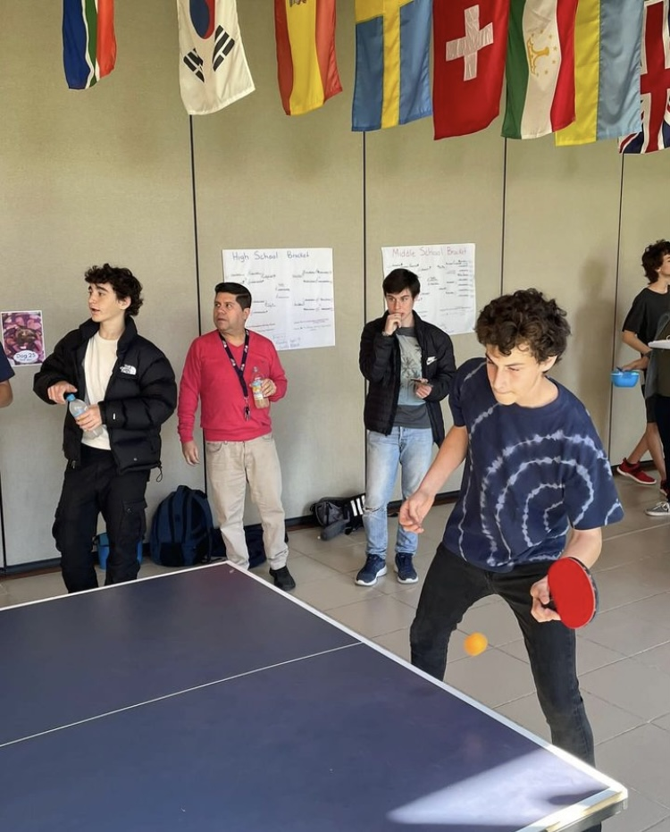Martin wins:20-22Martin Stein Defends
Alexander Derzic vs Sofia Castellano: Sofe's technique relies on a really weird and tricky serve and just hitting the ball back. Alex's technique relies on pretending to struggle against Sofe for 90% of the game and then destroy her at the end.
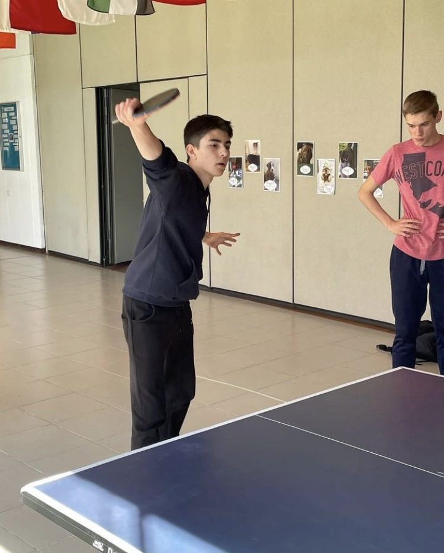Alex Wins:19-21Alex isses on purpose
Timo beats Javi and Rodrigo easily by a lot, he was nervous about Rodrigo, but he still destroyed him.
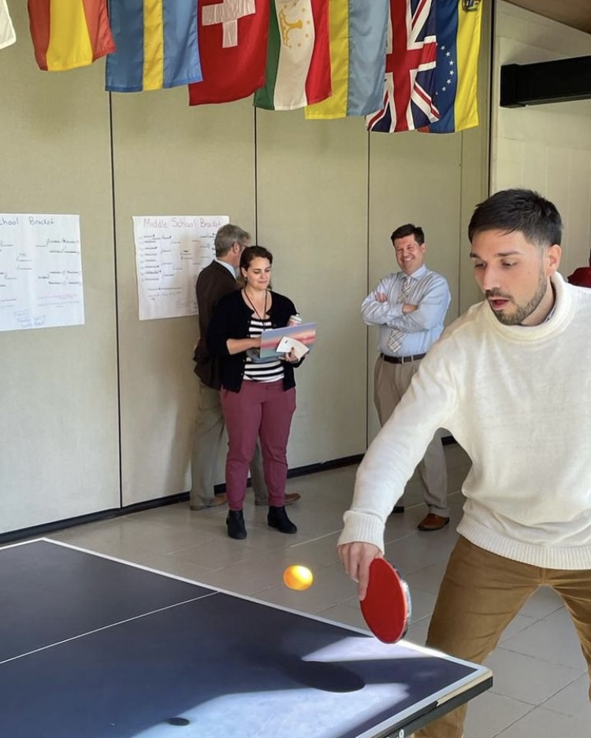Timo wins Timo vs ChadRodrigo Defends
Chad's strategy relies on playing better than his opponent. Chad managed to employ his strategy succesfully
Chad wins -
Mati's birthday celebrated by Salma
16/09/2022Chad and Alex play ping pong. Chad wins against Alex, and Sebas says that he will go to the ritual, because Timo said that the abandoned neighborhood was starting to get terraformed and used for something, the ruins had been demolished, and soon enouph, the ritual might not be there anymore and then timo would never know the secret.
Dani gave a very scientific explanation of why he likes apple juice more than orange juice.
In salma's house, everyone was drinking and vaping a lot, while some played cards. The main setting was in a music room. Also Martina was there but she was kinda dead.
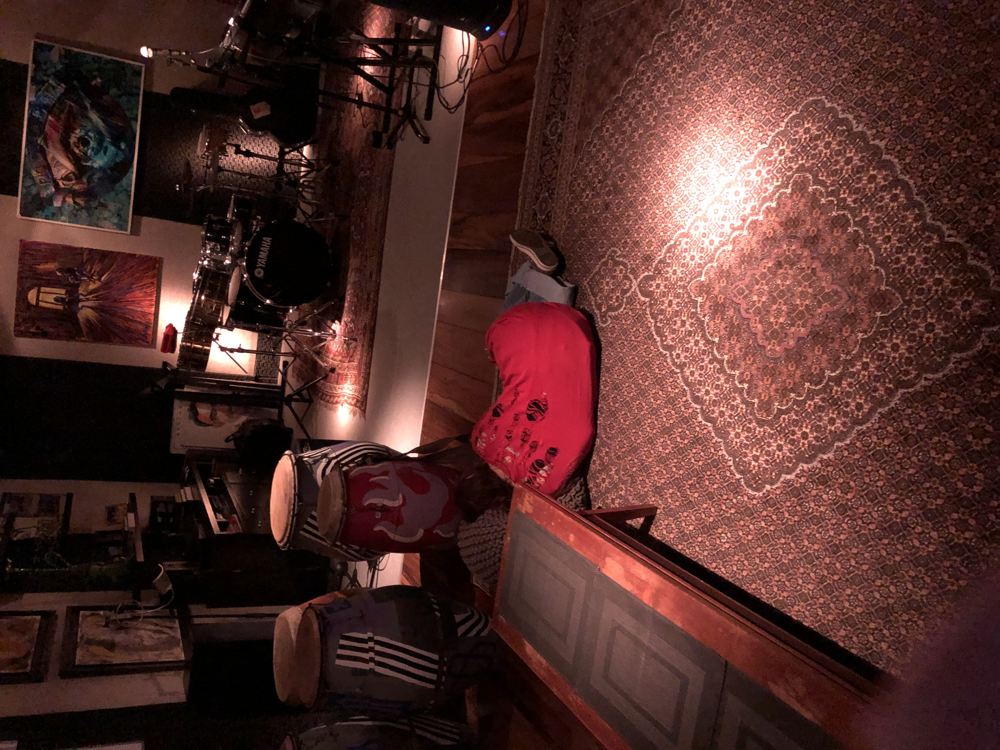Things that happenedDead Martina
- Everyone played many card games
- Bruno talked about how LSD was awsome, and how it changed her life
- Chiara admitted she lied a hell of a lot, and that she was deeply not happy because of reasons she refused to give.
- Nicole and Chad had the most intense game of speed ever(a card game.)
- Everyone did many shots and got drunk, also they vaped.

Everyone at Mati's birthday
-
17/09/2022
Timo arrives really late at volleyball, but the and he sees Alex, Luca, Eitoku, Fede, and others playing ping pong. The volleyball practice is over and Timo missed it. They went to watch the girls volleyball match. Then Luca left, and ALex invited people to his house tomorrow.
Timo went to check if the ritual was still there with her sister, and it was, however it had been move, and he knew it would not last long. On the way there he found many 4 leaf clovers. All ruins had been demolished and a bridge had been built across a river.
-
19/09/2022
The WWC homework meetup
People play ping pong and eat brownies. And Chad officially joined the WWC
Timo gives everyone present a 4 leaf clover
They talked about how no one should take Dani seriously.
Then they went outside since Alex's father had some guests, they played ping pong and immediately went back to work. They worked on many things like math, biology, chemistry, physics.
Then Eitoku and Timo took a big break in which they played a game of ping pong to 111, which ended up in a tie. Then they did more homework. Dani called Chad's phone and Chad helped him with Math. Then Mono called Timo, and Timo helped him with chemistry.
Eitoku got added to the lore as a biologist that was a cat and an orangutan which is allergic to nutella because of the palm oil and the fact that orangutans die because palm oil causes deforestation. Alex's speach was about this problem.
After Timo finished helping Mono, everyone said hi to Dani, Dani asked for a tour of Alex's house, and Alex game him the tour. And then Timo, Alex, and Chad played ping pont. In the first match, Dani and Timo talked about interesting things like calories, and Sebas, and how it was nice to study with other people, while Timo showed Dani the ping pong match, in which Chad won against Alex.
Then Timo went against Alex, it was getting dark and Timo can see better in the dark than Alex so Timo won 6-21. He also destroyed Chad for the same reason, and then destroyed Chad again. Dani was spectating the ping pong match all this time through the phone.
Then they went to do homework again, where Dani was helped by Chad and Fede while Sebas and Alex did chemistry homework.
-
19/09/2022
In UP, santino didn't finish an essay that he did not do for Mr. Turner. So he told everyone in the class to tell Mr. Turner to tell him he was not in the class. Right after that, Turner passes by and says hi to San.
No one finished the physics horizontal motion lab that was due today. And the class has a chemistry test for today.
The tournament finaleAlex vs Chad, it was a tight match, but Alex won , there will definately be another tournament in the future. Alex won a huge basket of food.
Epic ping pong match
Timo gave Ethan a 4 leaf clover.
In Chemistry class, Sebas asks Timo if Martina's hair was naturally red. Timo is absolutely flabberghasted at the fact that Sebas even considered the idea that Martina's hair was natural. Timo also told Sebas that Angie dyes her hair to appear blonde, but sebas doesn't believe him, this becomes important in like 1 year.
Also, Martina did not come to the school. During physics, Sebas and Timo made a joke that Timo killed Martina. This becomes a recurring bit
However Martina came to school later that day only to play volleyball, Sebas sees her, takes a picture as evidence, and calls Timo a liar. Timo claims that he never lies and Martina actually revived
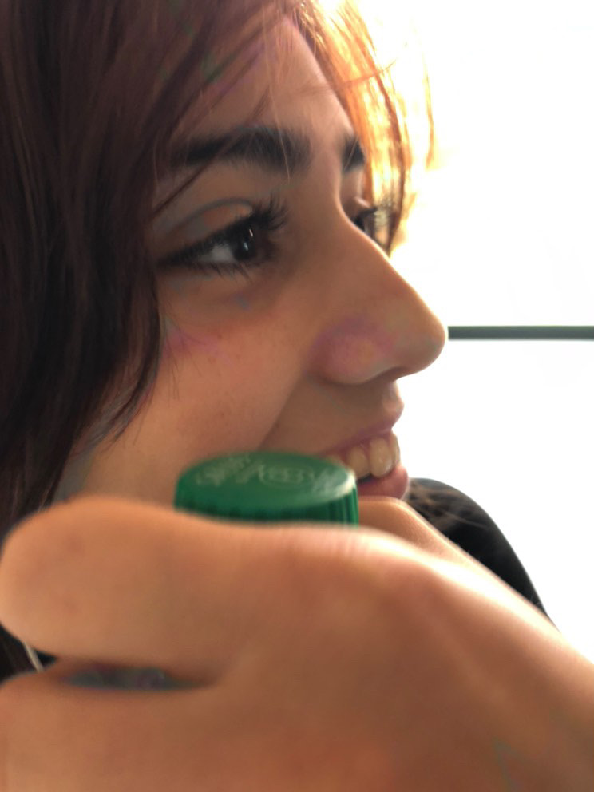"You are what I call a liar" - Sebas
-
20/09/2022
Many didn't come, since the long weekend starts tomorrow. In English class, Chiara has too leave, not before talking to Ms Mosckovicks about her reasons as to why she couldn't do her presentation, which a very deep and valid reason.
Mati has gone to Bariloche, and it is his official birthday, and sofe is sick, and Martina is simply not here.
Timo once again made the joke that he killed her, this time she's gone for sure.
-
21/09/2022
It is break, but still somethings happen
Dani called Sebas to tell him about the importance of the difference in tuxedos and suits.
Sebas wants to see what name the Starbucks lady writes, when saying that his name is Dignan Zuzumba. But the starbucks lady defused his joke by asking him to write his own name. The coffee was terrible. Also Sebas has to go to feed people on a church tomorrow.
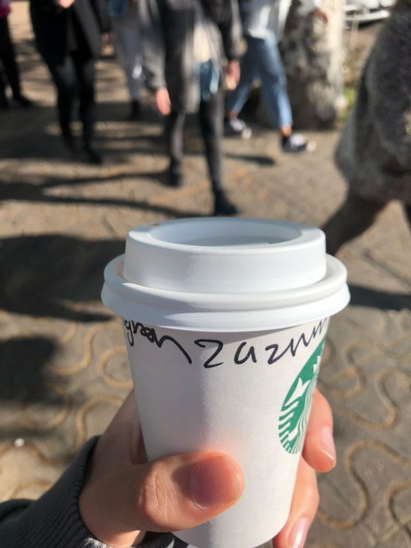Sebas's Cup.
-
22/09/2022
Sebas goes to feed people in a Church. He found out that people living in churches is quite common, he also found out that christian monks are quite funny.
Rodrigo is a friend from very early on in the school. And Nicole was his girlfriend. Luca and San sent Rodrigo, who is now in another school, Nicole's number. And Rodrigo sent many texts to Nicole asking her to be back together, and getting proffesionally rejected by Nicole. Rodri also went to hang out with Luca, San, and Mati, and they hated it.
-
23/09/2022
Secrets and the Ritual
The plan was simple, Timo walks to arocena, meets with Sebas, they go to Timo's house, then they go to the ritual, and Sebas tells him the reason behind why he chose physics HL.
The story starts with Timo, who was walking around as he usually does, when he stumbles upon Lucas Fiandra, who was chilling outside the tennis courts. Timo and Lucas said hi, but TImo didn't stay long since he had to meet up with Sebas. Then Timo saw a black haired girl who looked like Chiara, Timo was very conspicuously trying to figure out if she was Chiara, but was doubting it since Chiara's hair is brown not black.
Chiara then unexpectedly turns around and greets Timo who was taken by surprise. She dyed her hair black.
Sebas and Timo also see Martina who was apparently meeting up with Chiara at starbucks for unkown reasons. Timo and Sebas go to starbucks and talk about a lot of stuff. They mainly noted how Martina survived two murders which was kinda crazy. Then they went for a walk.
They went to see if Lucas on the tennis fields, but he wasn't, then they went back to starbucks, said hi to Chiara and Martina who were on their phones, then they went to a shady corner, where Timo informed Sebas what he had learned about Chiara at Mati's birthday. Chiara had said (while drunk) that she lies a lot and that she is sad.
Sebs noted how Chiara and Martina were on their phones instead of talking to each other, although Timo hadn't noticed. Then Timo infomred Sebas that Bruno knew a lot about drugs, and that he had done them, specifically LSD. Then they they talked about more random stuff, like drugs, and more.
Then they walked around more, talking about the french people, about a potential last senior trip, and about dresses. They also talked about the origin of the lore, then they started walking to Salma's house since Sebas was curious to know where it was, but they had to turn back since they might not have made it to the bus in time. Then they went to the bus station.
In the bus ride, Timo complain about how being tall is bad because you are always uncomfortable everywhere. Sebas and Timo then start to argue about a hypothetical scenario. If a bunch of women where placed on one side of the earth, and a bunch of men where placed on the other side, and both groups were tasked to defeat the opposite gender, who would win? Timo argued women were smarter and thus they could get technology before men, Sebas argued men are stronger. They also talked about how cool Alex is
Then they arrived to Timo's house, where they got ready for the expedition. Sebas grabbed a lego ninja handbook, and Timo grabbed her adventurous spirit.
They went on bikes, and they were talking about the physics, while Timo showed off his ability to ride the bike without hands. Then Timo fell. They made their way to the abandoned neighborhood where Timo pointed out some clues that this was an abandoned neighborhood, like the sewer system, and how the ruins of the entrance where demolished.
Sebas tends to always do what is easier, so it was really strange for him to take what is considered the hardest class of the IB (According to Mr Lopez). They approached the ritual, and Sebas revealed his reason for picking Physics HL instead of Biology HL.
Timo was in shock. One of Sebas' clues was a lie, which made it immposible for Timo to luckily guess it or figure it out since Timo is quite lucky. Sebas reflects on how it was a stupid decision to make, but Timo differs. Plus it's much cooler than Timo's reason for joining physics which was mostly because of a dream he had.
Timo kicked the center of the ritual, destroying it, since it would be the last, and most important time he would visit it. Sebas fears that they just got cursed for all eternity. And they took a live photo.


Both in the ritual and the destroyed ritual
.jpg)
.jpg)
Ritual Boys
Then Sebas revealed that Eitoku already knew his physics HL secret. Timo was absolutely furious at how Sebas told Eitoku before him. Anyways, by this point everyone has the suspicion that Eitoku like Martina, that's why they made the clapping joke. However Timo thought it was only a joke and Eitoku didn't actually like her. Sebas thought Timo already knew so Sebas accidentally revealed that
Eitoku likes Martina
Sebas also talked about other stuff. But I don't think this time it was really that relevant.These secrets only added to the feeling of complexity throughout this chapter. Timo was surprised about Eitoku liking Martina because Eitoku had explicitly told him that he didn't. Timo says he is going to try to get Eitoku to tell him the truth. Timo also asked Sebas who was the coolest person Sebas has met, Sebas said that it was someone whom he slept in a bench with. Then they reflected on their reasons behind choosing physics IB and how logic was not one didn't play a huge part in the decision making progress. On their way back home they talked about how everything is connected and there is power in belief. Then they arrived at Timo's house, and Seba left.
-
25/09/2022
Sofe
-
26/09/2022
Nicole tells her story about Rodrigo and the UP History class lauphs. Basically they kissed in elementary under a puff.
Timo asks Martina for this thing back, and she says she will give it back tomorrow.
-
27/09/2022
Sebas's birthday.
Fede gives Sebas a pillow with pictures of Sebas. Timo gives Sebas a pengiun plush.
The SAAC name are given, Lupi, Luca, Alex, Eitoku, and Chad are going to go to Chile to compete.
-
29/09/2022
Megan informs the TTG that she is going to live through a hurricane.
Martina gives this thing back to Timo. Timo gives her a 4-leafed clover in return.
-
30/09/2022
Timo gives Chiara and Sofe a 4 leaf clover.
At night that same day, Timo goes to Romanella's birthday, where he gets stomach sick from his crohns disease and something else he ate.
Fede, Eitoku, and Sebas go to a pride parade.

Timo at the party
Fede at a pride parade
-
The Something
01/10/2022Sebas invites the WWC to Rudy's
Fede's mother discovers he is gay, and fede gets really emotional.
Timo renames a group with Milla, Sebas, and Megan in it, "The Grass Starers" and tells everyone that he found 5 four leafed clovers, and one 5 leafed clover. He challenges everyone in the group to find one.
The meetup
The 5 leaf clover.
The WWC minus Timo and Alex go to expresso pocitos to meet there. Then they start going to Rudy's, but they get a call from Alex, saying that he jus arrived at expresso pocitos, then Timo joins them, and they go back for Alex.
After that the WWcc walks to Rudy's, Timo tells Sofe about some story from the camp. Fede jokingly hates on Chad for being straigh, white, blonde, and from the US.
Then they to Rudy's, and they talked about the relationship between weight and height, and beauty. Sofe, Sebas, and Eitoku were really tired.
Timo confronts Eitoku about Martina, and Eitoku tells Timo that he once liked Martina, but because of "many reasons". This makes sense to Timo.
The WWC sings happy birthday to Alex and they get Rudy, to get him a chocolate cake with a candle. It's not Alex's birthday
Then they played a game with cards, the cards where circle shaped and had several objects on them, all cards have one object in common, the games with the cards are normally to find the similar object as fast as possible.
After that they start leaving, Chad's dad takes Timo, Sofe, and Fede to their house. Timo adds Eitoku to The Grass Starers
Fede tells Timo that there will be a paper airplane competition, an idea that Timo had suggested. Fede also has the idea to sneak a happy birthday to alex in all of his stuco anouncements although this never happened.
-
The middle of anti-winter movie
Mati had recommended a movie to Angie, and so they met up. THe movie was "the midsomar festival" or something like that, it was about a cult is sweden, and it was a really macabre movie. Chiara was with them, but she could not watch it.
Then Mili tried telling Chiara about the movie, but Chiara still found it too unsettling.
-
2/10/2022
The UP class talks about the movie that the girls watched. They watched the mis-somar festival which is a movie about a cult in sweden that does some macabre stuff. Angie described a torture method of the movie and Andrea was stunned. Chiara apparently had a hard time watching the movie which makes sense
Luis arrives and it is his first day. All I know is that he plays football
Welcome -
04/10/2022
Timo joins drama club
TImo gives his first guitar/music class to Sofe and Sebas
Guitar classes with Sofe and Sebas
-
07/10/2022
The quarter closes this day, it is a half day, and the student council hosts a paper airplane competition.
-
Fate
8/10/2022Ethan invites Timo, Alex, and Eitoku to whatch a show called fate. Ethan loves this anime a lot and he has been talking about it for weeks.
-
11/10/2022
Ms Mosckovicks arrives really late to class, Ethan and Sofe are feeling terribly. Monday the class did not have school.
Timo brought balloons, and thought it was a great idea, until Sofe almost killed him.
Sofe attacks Timo and Balloons
Timo and the rest of the Wander Warbler's Contingent
-
P-SAT 12/10/2022
While most students do the SAT test, Dani and San study for physics. Then Timo comes and studies with them a bit. Dani asks Timo why Sebas finds him interesting, Timo diverts the conversation and avoids answering the question.
Then they go to the library and the inflate some balloons and play games while talking about funny times.
Martina went to a horse competition in Argentina.
-
11/10/2022
Drama club starts, they practice a play that has many references to other musicals.
-
13/10/2022
The english classes switch once again.
-
Fate
14/10/2022Alex, Eitoku, and Timo go to Ethan's house to watch a series that he really likes, it is a very convoluted series about mages that can summon heroes from the past to fight other mages that can also summon other heroes from the past. The last mage and the last hero get a wish granted by something called the holy grail.
After watching the series, they go to sleep, and Ethan and Timo talk for 4 hours about many random things like love stories and their insecurities.
-
Many Things Happen
15/10/2022Eitoku, Alex, Ethan, and Timo watch some more Fate, and then they make a plan.
The PLan- Watch fate
- Timo, Eitoku, and Alex go to velleyball
- Everyone goes to a japanese event with authentical japanese food
- Go to the SAAC volleyball reunion
- Go to Ethan's again
- Watch fate
SO after watching fate, Alex Timo, and Eitoku went to volleyball, and when practived finished, Ethan's dad took Alex, Eitoku, and Timo, but Lupi didn't have a ride home, so he came with the group. They ate at a food store
Then they went to eat ice-cream, they planned a way to get to the japan event, but they did not find any way. Then it started raining and Lupi invited all to his house to stay.
Lupi played chess against Timo while others talked. When the game finished, Lupi showed off his amazing animal toy collection that he had as a kid, he really likes animals and knows a lot about them.

Lupi's living room
Then Marco(Lupi's brother) jumped on Lupi's bed and broke it. So after scolding Marco, Lupinacci shows some everyone some goofy songs. And then he plays minecraft, and he is very surprised about how bad he is at it. He considered dropping out of IB to get good again

Sebas and ALex talking in Lupi's house. In the video, Lupi had insulted a person with the minecraft skin of "Alex" but Alex thought that the insult was directed to him for now reason.
Eitoku's father arrived and took all everyone except Sebas and Ethan to the volleyball asado. Lupi was very excited to see how Alex's haircut would end up.
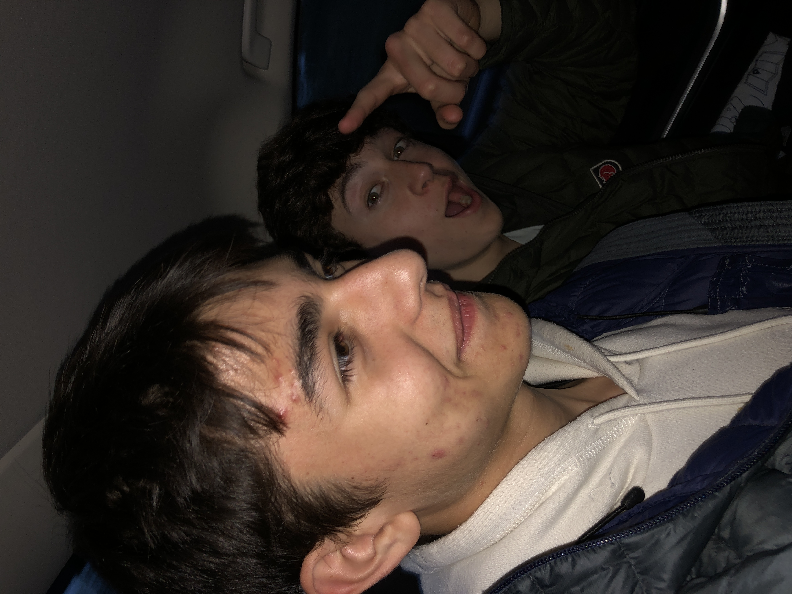Alex hours away from what is probably going to be the worst haircut of his life
In this Asado (because of tradition) Chad, Eitoku, and Alex got haircuts, Alex's hair got completely ruined, Chad's hair was ruined from the back but looked good from the front, and Eitoku got a mullet that didn't look that bad.
.jpg)
.jpg)
.jpg)
Chad and Alex got haircuts for SAAC.
After that, the group went to Lupi's house, and then the WWC members that were there went to Ethans.
-
16/10/2022
Everyone returns home
-
18/10/2022
Timo hosts guitar classes to only Sebas since sofe couldn't attend.
Guitar classes
-
19/10/2022
Some people where chosen to go to SAAC, the chosen people from the group where Alex, Chad, and Eitoku, but unfortunately someone from another grade (Martina Stein) got sick, and was replaced by Mati.
What happened that dayThe Saac team went to school and got changed, they started dunking on the hoops, Jeff normally doesn't allow poeple to dunk but he was not there. Then the Toro, which is the UAS mascot went, dunked a ball, and hit the griddy.
After that they did the camino, a tradition where the SAAC team goes running through the main hall and everyone cheers and sends them away to Chile. Alex and Chad played ping pong one last Time before going to the Airport. Then they went to the bus, where they slept and played clash royale
Once in the airport, Lupi almost lost his paspport stuff twice, once he just dropped it all while he was standing, the other time he gave his stuff to Chad, he forgot that he gave it to Chad, and Chada forgot Lupi gave it to him. Lupi bought a big bag of gummy bears, then they sat and ate lunch, where they saw a TV that glitched every time an old man appeared. Lupi and Chada played fall guys, and Chad won, even though Lupi is also really good.
Then they got in the plane. In the plane Alex and Lupi watched Luca Cassoni and Luca Taccone play games in their phones, then they played chess, Lupi won the first game of chess, and they tied the second one. Then Alex fell asleep and Lupi got photos of him which were terrible. Eitoku had brought a mask and glasses to completely cover his face.

They arrive to chile
Then they went to dunkin donuts where Eitoku and Alex almost got scammed. Then they had to carry the luggagee with T-Shirts and other volleyball stuff, but it was so big that the wheels didn't work, so they had to drag it the entire way to the bus. ONce in the bus, they went to school.
Alex went to meet his host, then they played volleyball, watched a movie, and ate dinner.
Also Bruno takes this picture of santino checking a ToK assigment with Mr Turner.
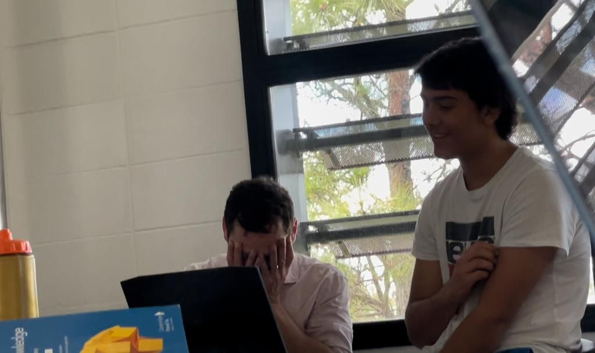"World Ends"-Bruno
Volleyball games
-
20/10/2022
They played the games, but they lost the 2 first games
-
21/10/2022
They won the 3 games that they played, and then they ate pizza.
-
22/10/2022
The final games were played, Niddo got first, and UAS got fourth, but they say that they got scammed.
-
24/10/2022
Everyone is back, people from SAAC and Martina.
Daniel tells everyone in ToK that there is no way they ever had deppression. Fede and Ethan get mad at him.
Also, Timo and Pauli go to some sort of reunion that indian food and there is also an indian play going on. It's an indian culture thing.
Timo watches from afar because the music was loud
-
Note:Stuco has been planning a haunted house for halloween.
-
25/10/2022
Most people got to a Uruguayan University call to UM. But some stay in school. They come back in lunch, the WWC talks with Martina, Chiara and Angie about Nikki trying to get with Chad, then Timo arrives and Chiara tells him to check his phone, which he lost.
-
26/10/2022
Timo somehowe found Dani's sweater in his back pack, and he has no clue how it got there. Maybe Dani got confused and accidentally put it in Timo's back pack.

Dani's sweater
Also Fede plays the super smash bros theme.
-
27/10/2022
Martina anounces she will live to Japan in the summer break with Eitoku, and will miss 1 day of school next year. She also died her hair a more vibrant shade of red.
Sebas, Lupi, Chad, Ethan, Eitoku, and Fede all start playing a lot of pokemon go.
-
Halloween School Event
28/10/2022Everyone is dressed up
Person Dressed up as Dani
Patrick Bateman, the American Psycho
Nicole
A vampire
Milagros
Men in black agent
Chiara
Cupid
Fede
Scooby-Doo
Chad
Fred Jones
Sofe
Skeleton
Timo
CapeMan
Dani
Patrick Bateman, the American Psycho
Martina
Some anime character
Mati
Some killer
Luca
Some killer
Salma
A student from a show
Angie
Barbie
Sebas
Holden Caufield
Bruno
A garbage man/collector
Eitoku
Harry Potter

Taija

CapeMan

Fede
There was a haunted house, Timo put Dani's sweater in the haunted house, and told Sebas to tell Dani to go get it, to trick him, Dani did not go, so Timo just gave it to him, saying he just found it there, Daniel was really confused by this. Timo and Sebas plan to make Sebas more ambiguous towards Dani.
After the school was over, Salma canceled her halloween party, very sadly, then Chiara tried to make a party in her house, but no one replied, so it was canceled again. After Chiara's house was party was canceled, people started replying, but it was too late.
Timo sees these bagpipe people
-
29-30/10/2022
Wandering in the pokemon world
The Table Tube Gang talks about unfortunate events and how complaining is sometimes a good thing. This is because several unfortunate events just happened to Timo.
Later that day, Timo, Eitoku, Ethan, and Sebas go to Timo's house to play pokemon go. They arrive and they go to Timo's room. Then they go out to hunt for pokemon. Timo's sister, Paula, comes with them.
They went to a pokestop at a nearby shop and they tried going to a gym but there was a fence that prevented them from getting there. On the way back, Sebas talked to Timo about werewolfs. Sebs was confused as to why would anyone ever want to be a werewolf. He had garlic in his pocket in case of a vampire attack. They started seeing who was the most likely to be a vampire, Timo also showed Sebas a cool song by The Cuartet of Us. Sebas also tells Timo that Dani texted him asking how he knew about the sweater being in the haunted house. Dani being confused is exactly what Timo and Sebas wanted.
When they got to Timo's house, everyone took tests about their sexuality, turns out that according to the tests, Fede is the most straight person there.
After that, they decided to go to the ritual, however the place was completely overhauled since the abandoned neighbourhood was being rebuilt. They still took some cool pictures though.


Ritual Pictures, but the ritual is gone
On the way back, Fede reveals that he feels kind of uncomfortable with some of the jokes that Ethan makes, Sebas and Timo agree. Timo also thinks he saw something but it was just his imagination.
After that, they all watch inspector gadget, eat ice-cream, and then go to sleep.
-
30/10/2022
They wake up, eat medialunas, and they leave throguht the escape vehicle. Sebas eats a 4 leafed clover.
Later that day, the grass starers have a discussion about going to LA after the senior year ends.
Chad creates a group specifically for pokemon go.
Also Marina's birthday.
-
31/10/2022
Halloween!
Timo goes to get candy with his Paula, Marco, and other people
-
01/11/2022
Eitoku has left for MUN debate
Timo comes to Math AI with a bunch of candy and shares it with everyone, he then reveals that he had lost his streak of not dying in his dreams, he had a streak of 5 years of not dying in drams, but the streak ended last night when Martina killed him in a dream. Martina then says that she had a dream where she killed her killer, saying that the killer was probably Timo. Sebas and Timo look at themselves in shock.
Ethan has been making discriminatory jokes too often, Sebas and Timo believe this is uncool and they plan to tell him if he doesn't stop.
-
03/11/2022
Chiara lost a bag with clothes, so in the middle of Digital Society, she goes and asks the security guard called Alfredo, Alfredo searched the entire school for Chiara's bag, while Chiara chased him. Alfredo ran towards the girls lockeroom. He unlocked all lockers, and in the last locker, she found her bag.
Later that day, Timo invites the WWC to a pokemon go gathering at a new ice-crean place he found. Then he invites Lupi through the Pokemon Go Instagram groupchat. There is a seperate groupchat with Lupi because Fede is against adding Lupi to the WWC groupchat because he doesn't really like him or the jokes he sometimes makes.
Also, Alex explains some math to lupi.
Math
Later that day, Timo finds a dead cat and he informs the Table Tube Gang groupchat. Megan liked the dead cat

Catherine the cat
-
In school, Sebas is happy because the Wander Warbler's Contingent is doing pokemon today.
Seba is happy
Ice-Cream and pokemon go
4/11/2022Fede, Sebas, Alex, Chad, and Lupi arrive at Timo's location, they talk about pokemon, but Ethan and Sofe are taking too much time, and Alex suggests they should get going to the ice-cream place and wait for them there. Timo reluctantly agrees. The ice-cream place was 2 steps away Alex just didn't notice.
Ethan and Sofe arrive, and then Sebas notices that the people at the ice-cream place have the same coffee T-Shirts that Timo has. The ice-cream shop is part of a coffee shop called "La Madriguera Cafe". Then some of them eat ice-cream at this place. They talked about pokemon and Fede approved of the ice cream. Then they went to las delicias to get cheaper ice-cream.
.jpg)
Ice-cream enjoyers
Timo, Ethan, and Sofe went to walk around and hunt pokemon, Timo talked to Ethan about how he is in a Drama club and he is singing "The Other Side", and Ethan bothers him by sing this song.
.jpg)
Hamster
When they get back to the group, they fight a gym battle, where they get Giratina, a very powerful pokemon. Chad and Timo failed to get him, and Fede got a shiny Giratina. Then they all go to another Gym that is close to Lupi's house. Timo and Chad get their Giratina. Lupi, Sofe and Sebas doesn't because their phones run out of battery
They also created this piece of art

They hit the griddy and jump
Then they go to Lupi's house where Marco's birthday was being celebrated. Everyone says hi to marco, then they see lupi playing minecraft again. Eventually, everyone returns to their homes.
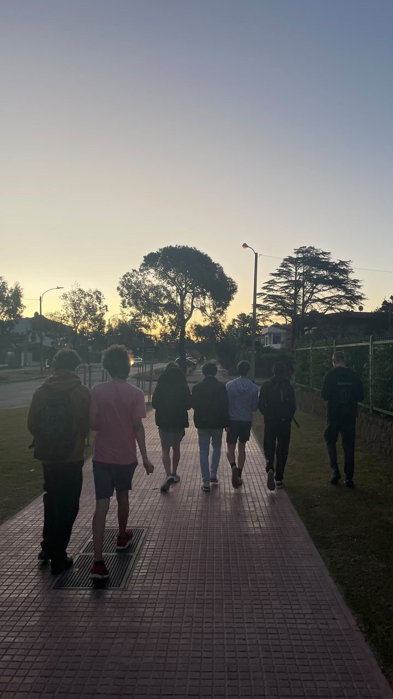They go to Lupi's house after winning in a gym
-
5/11/2022
Family fun day happened, it was a pretty normal family fun day, where Chad and Alex hunted pokemon, Mati and Lupi hanged out, Nata came to meet up with old friends, Martina and Chiara talked, and Fede complained about all the flaws with NHS and STUCO.
-
07/11/2022
Timo stays in Fede's home because Timo's family left to argentina.
Eitoku comes back from MUN in chile and class pictures are taken. Eitoku almost got with someone that was really young during MUN, but it turns out that he just read their age wrong.
Sofe, Timo, and Sebas discuss Eitoku's relationship with Martina, apparently Eitoku still likes Martina, so what Eitoku told timo in 01/10/2022 was sort of a lie.
Fede and Timo play Mario for a little while. Timo spends 20 minutes trying to perform a speedrunning technique. Timo is staying at Fede's because his parents are not home.
Mario jump completed
-
09/11/2022
The ToK A class creates a discord group called Turndog, where they make innapropiate jokes during UP History, and every other class aswell.
-
10/11/2022
Here is a picture of the math class that I took

Mr Zarsky is such a great teacher and anyone who disagrees is wrong
Timo also find a dead rabbit, Megan didn't appreciate it because she was eating.
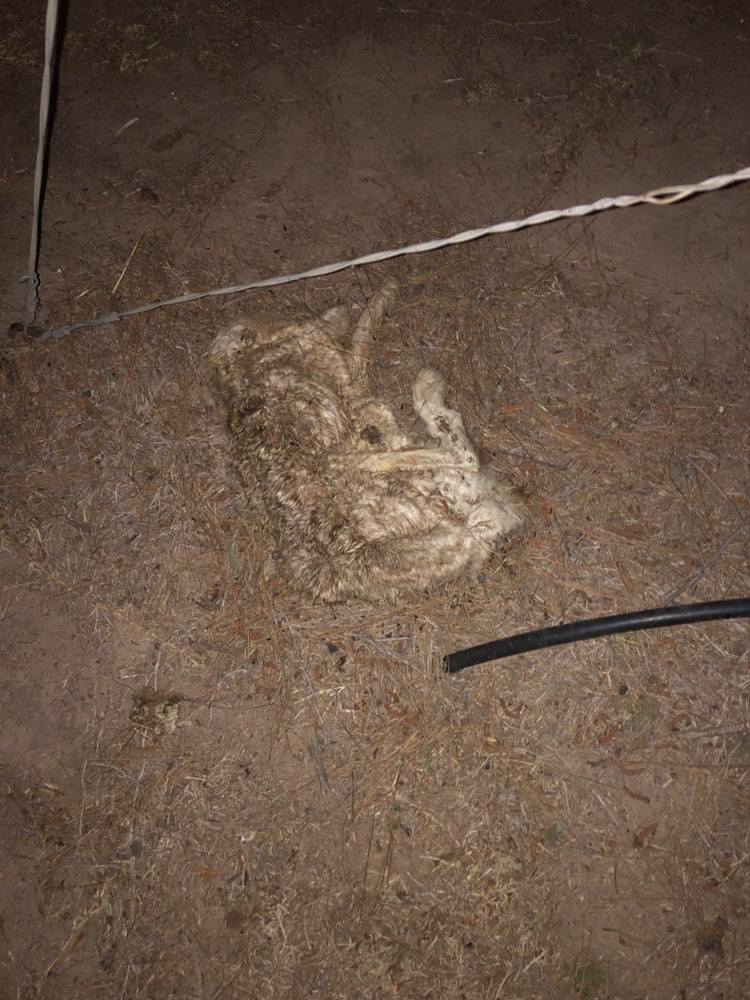Rabbit
Luis invites people to his house at 13/11/202 at 00:00
Chiara invites everyone to he house at 11/11/2022, 21:00
-
11/11/2022
In ToK, Turner talks with Amaral, and reach the conclusion that they will add a very potent curve to grading in ToK assesments, because all of them were pretty much trash.
Sebas tells Timo about Chiara's dream where Sebas told Chiara that he needed to "go back to his roots", then Fede agreed with Sebas and Timo played pool.
Alex says that he might have a theory as to what THE JOKE might be.
Chiara's House
Chiara invited people to her house. Timo convinced Sebas to go there. Many people where playing billiards and Chiara did not like that since she wanted to know everyons secrets by playing games like truth or dare.
Sebas tries out vape, and he hated it. Suddenly Chiara enters the billiards room, and she says that anyone that misses has to take a shot, but no one does it. After a while, Chiara forces everyone to sit and play a game that Mati invented, a game in which someone asks a question, and if they don't answer, they have to do a dare.
Bruno gave Sebas a speach about LSD's and drugs, and, THE BEINGS. Bruno gives a very detailed explanation on what the Beings are.
Many questions were answered, but no question was really that revealing or interesting, until Dani's turn came and Timo asked the question.
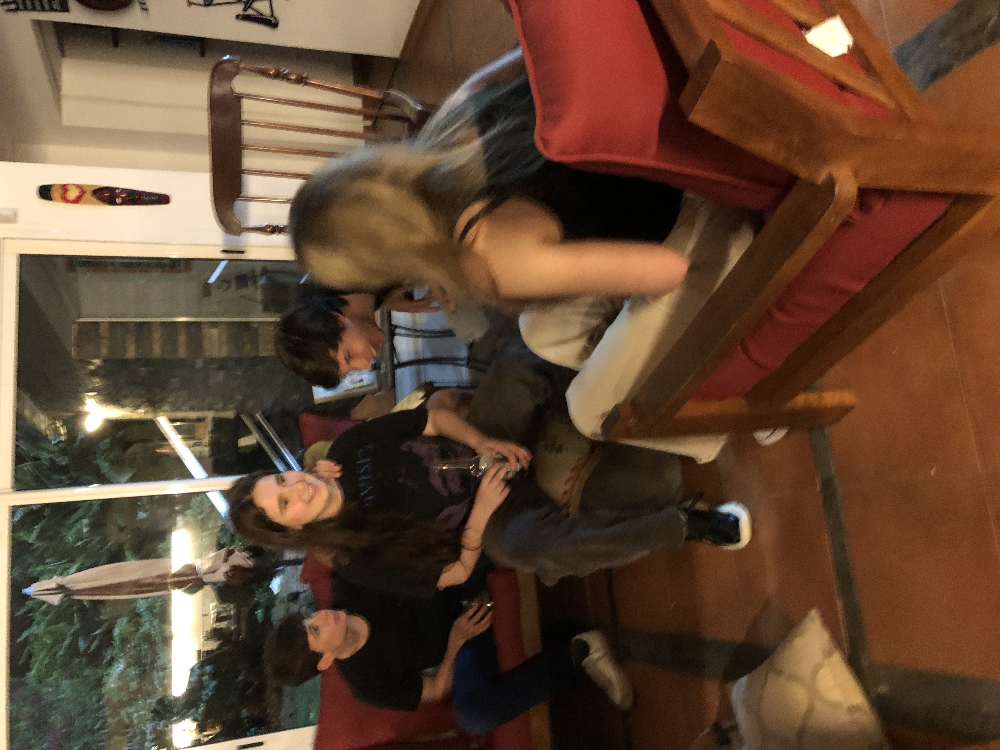 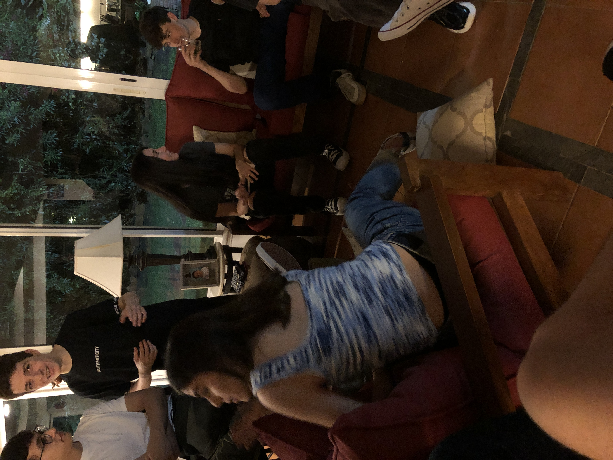
People at chiara's house
"Why did you ask that question in camp"
Everyone wanted to know the answer, and Dani said
"I just wanted to know if I could reach it"
Which was the obvious, but still strange answer. Turns out that this wasn't the full reason, but that will be revealed in the future.
Also, Fede officially revealed that he is in fact gay. In case there was any doubt before.
After that, Chiara wanted to play spin the bottle, but then regretted it realising she might actually have to kiss someone.
Chiara's back hurts but Bruno knows how to give massagess. Bruno has some chiropractical knowledge that he obtained from somewhere, so people often ask him for massages.
After that, people got bored because no one had any interesting secrets that they were willing to tell, so people started playing billiards again. Then Martina comes, having missed everyone's secrets, she immediately starts drinking and then gets tired.
Then after a while people start leaving, Chiara, Timo, and Sebas talk about dreams, and then they leave too.
Also Timo left absolutely everything at Chiara's house and he won't get his stuff back for a while.
-
12/11/2022
Timo and Sebas see a light, the same light that Timo had previously seen. Sebas understands and he is now equally confused.
People from Soccer SAAC cut their hair
-
13/11/2022
Sebas and Eitoku look at insects, and a frog.
-
16/11/2022
Nicole has several problems like apendicitis, a respiratory infection, a cyst, and other things. Also the SAAC team leaves today to play football in Lincoln.
-
19/11/2022
The WWC goes to Ethan's house to eat pizza and watch anime, Lupi also goes there, and the WWC considers adding him to the group once again.
-
20/11/2022
Fede admits that it is awkward having Lupi in a different group, so, so he agrees to add lupi to the WWC. So far he seems to have great chemistry with everyone, mostly due to the fact that he shares classes with people in Spanish B and Chemistry.
-
21/11/2022
Martina goes to Quatar to watch the world cup.
-
23/11/2022
The School has thanks giving lunch.
After that they play some activities like ping pong, tug-of-war, and chess.
Santino shaves his head, and he calls the entire groupchat. Dani, Chiara, Angie, and Timo join to admire his baldness.
-
WWC Uruguay vs Korea
24/11/2022Eitoku, Sebas, and Timo go to Alex's house to watch the football game of Uruguay vs Korea, and it was a 0-0 tie, very anti-climactic. Timo and Sebas routed for Uruguay, while Eitoku and ALex routed for Korea. Martina (who is in quatar) said that the match was very exciting, everyone begs to differ, but then they remember a ToK class in which there was a question "Who has more information about the concert, the one who attended the concert, or the one listening to it at home." Most answered that the one at the concert could aquire more information and thus he knew more. Therefore, Martina may have been right.
After the surprisingly boring match, they played football, Alex and Eitoku vs Timo and Sebas, and they tied 4-4 and they were all exhausted from the heat. Alex has the idea to try to play skylanders, and after a lot of searching, he finds everything, except the cables needed to connect the console to the TV. Then they played a game of plants vs Zombies Garden Warfare. They made teams, Timo and Alex vs Sebas and Eitoku, the team that got the least amount of kills in three rounds had to run ten laps around Alex's yard. Alex and Timo started off winning, but Eitoku and Sebas pulled off an amazing 20 kill round, and Timo and ALex had to run in the heat of the sun.
Then they went to eat pizza at a Domino's Pizza, everyone ordered peperoni toping, except Timo, who always orders olives. They ate the pizza at Alex's house, and it did not taste good at all, all pizza's tasted terrible, except Timo's for some reason.
After the finnish eating pizza, the Sebas leaves and Eitoku, Alex, and Timo play ping pong, after that, Alex has an amazing idea, he grabs badmington rackets, and tries to find a birdy while Eitoku and Timo play ping pong. Alex fails to find the birdy.
Alex improvises, and uses a ping pong ball instead of a birdy, it's terrible, and insanely hard to hit and aim, but they mannage to do several passes, until the ball ends up on a tree. They try to shake the tree, then they try to jump to the branch using a chair, but the chair sinks to the ground when they jump off of it, they tried many other ways to reach the ball, but all ways failed, and at the end, they never managed to get it out.
Martina also watches the football match, but she is in quatar watching it, she also meets up with Vale afterwards.
-
Wakanda forever... No wait, Bullet Train
25/11/2022Timo arrives after running all the way from arocena to Fede's house, and after that, Eitoku, Sebas, and Alex arrive shortly after, they talk a bit, and Timo makes popcorn. Fede criticises Timo for not putting enouph salt and butter to the popcorn
Fede's pet hedgehog defecated on Alex, and then Sofe arrived. After that, Alex cleaned his hand, they started to put the Wakanda Forever, but the quality was too bad. Sofe suggested that they should watch bullet train instead.
The movie was about several illegal groups that were all lured to a train by someone called the white death. Everyone on that train did something that resulted on white death's wife to die and thus the white death's plan was to make everyone kill each other. The white death's daughter is on the train, she almost killed a father's son in order to lure into the train and try to force him to kill the white death (She hates her dad) However the father's father (The elder) arrives, and it turns out he knows the white death and he has been plotting for revenge for a long time. Also, the guy who killed the white death's wife was sick so the main character subs for him, meaning that he just got completely unlucky. There is also a guy that keeps talking about Thomas the Tank Engine and he is really cool. It ends with a de-railed train, the white death family died. And the main character learned a lesson about fate.
After that, they call Alex's friend to tell him something, and then they leave.
-
26/11/2022
Dani tells Timo about a song that reminds him of Sebas, Timo agrees, and then they start discussing about songs and the feelings or memories they evoke.
They join a discord call, and then Mati joins, because Dani and Timo where talking about music, Mati creates a game with the music "Bleu" by Komiku. Timo asks Dani who is the most ambiguous person in the class, and Dani says that it is Timo or Sebas
Mati then showed Timo and Dani a very convoluted Roblox game that was basically a simulation of the real world dynamics of the US govenrment, and Mati was applying to the US intelligence team.
Bleu by Komiku, the Trust game song.
Also it was Lupi's Birthday, but he did not celebrate it.
-
29/11/2022
Alex reveals that he had been gathering little pieces of evidence to identify what The Joke is. He used a quote form Ethan, Sebas's reaction to being supposedly expelled from the tournament, and Sebas refusing to play ping pong against him when they where at Sebas house to conclude that the joke was that Sebas was actually terrible at ping pong.
The Table Tube Gang is informed of this, and Megan sends a video of her cat.
Megan's cat
-
30/11/2022
In chemistry, people give some presentations about chemical bonding. However Timo got confused and instead of offering an explanation with resonance, he accidentally explained the concept of formal charge to the class. Amaral liked this since Timo introduced the next topic that would be covered. Timo also did extra slides that had content he did not have to present. He made his presentation funny, including an inside joke that he had with Sebas about dipole moments. Lupi Lupi and Lucas also presented about covalent bonds, but they covered VSPER theory.
This is the example that Timo used to explain formal charge, although the video is much older / Also dipole moment
-
01/12/2022
Chiara gives Timo his charger that he had forgotten in her house. However the charger had a cable that did not belong to Timo. But he didn't realise this until 3 months had passed. By then he made the decision to keep it and return it to Chiara once school ends.

Timo confused the happy face in the cable for the "C" that stands for his father's name "Cristian". The charger belong to Timo but the cable does not.
Also
The drama club does his act "Sweet Honey Dreams"
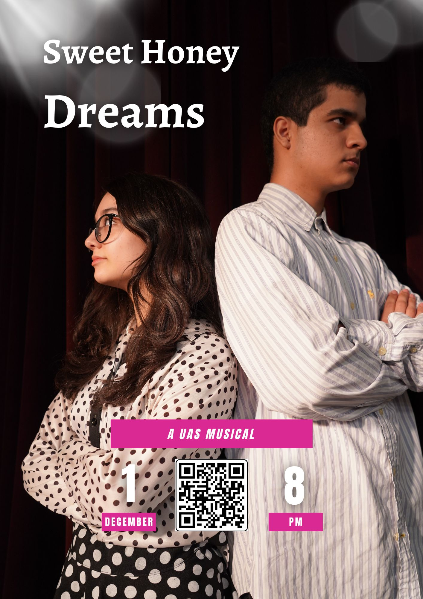It is a story about a kid who witnesses her parents fighting, th kid also loves musicals. So she has a dream where people from several musicals come to a banquet, among the people, her mother and father are there.
The mother's sister tries to set up the mother with gaston instead of the real father. But then it is revealed that the mother and the father love each other, and then Gaston is sad. La foo tries to confort gaston, and he does so succesfully, but then Gaston abandons him, leaving him ignored by everyone.
Then, a buisness man appears and tries to convince his partner to buy the hotel where all of this is happening. He manages to convince his partner, but then the partner's assistant gets mad at the fact that she was completely excluded from the buisness just because she was a woman, and she has an argument with the partner.
Back to the main plot, Caressa(The mother) realized that Jonathan(THe father) is not good enough, and Gaston is better and that she should follow her sister, so she goes with Gaston. Jonathan then sings about how sad he is about this occurrence. Caressa is not sure about Gaston, and she has asong where she realizes she has to be with Jonathan.
Caressa confesses her love to Jonathan, the Caressa's sister comes and reveals that she sold the hotel to the buisness man, the woman assistant quits and starts her own buisness and the buisnessman builds a plans to build a cassino. They all sing about living in a brand new world where all problems are solved. La foo works at the cassino, the assistant creates a buisness, the buisnessman got the hotel, and Jonathan and Caressa are bag together.
The kid wakes up and tells the parents that she had a dream where they loved each other and they neve fought. The parents reveal that they do love each other, and they that it's always them against the problem.
Timo sings as the buisnessman, the buisnessman was apparently named Phillip
-
02/12/2022
Uruguay wins against Ghana, but they are unable to classify since Korea scored more goals. Many say that the game was extremely unfair and that Ghana did this because a long time ago, Uruguay didn't let them classify. Sylvia didn't like how Ghana celebrated taking Uruguay down with them.
Everyone is watching
Sebas shows everyone that he can speak fluent spanish, and he starts roasting Milargros about how bad Argentina is
The WWC goes to watch the new black panther movie at montevideo shopping, but they first group up in Rudy's to eat hamburgers.
-
05/12/2022
San tells a story about how Lorenzo choked him and he fainted, he clarifies that it was a joke gone wrong.
Dani and Mati talk about their SAAC swimming experiences, they were in a hotel and had an entire floor to themselves.
Timo does a competition through the WWC groupchat, whoever replies to him first, gets a Alfajor. And Sofe won, Timo then held a second competition where Lupi won, even though Timo bent the odds to help Chad win, since Fede wanted Chad to win. But Lupi wins anyways.
Also, Luis leaves to spain for some football stuff.
-
06/12/2022
Lupi tells Timo that he can give the Alfajor to Chad, but Timo forgets them anyways.
Martina comes back from Quatar, since Uruguay lost, and the finals are about to start. She doesn't come to school though.

Martina comes back and uses a metaphor
Spain loses against Morocco. Fede realises how strange this world cup is, since many underdogs such as South Korea and Morocco got quite far
Also it's finnish independance day.
-
07/12/2022
Martina died her hair
Also, here are some SAAC Swimming pictures because that is also happening right now and I forgot
.png)
.png)
.png)
.png)
Swimming pictures
-
08/12/2022
Megan tells the TTG that a girl almost got into a fight with another girl that laced her drink, but she didn't because she had to go to the doctor. Also her school has some kind of technology that prevents cellphones from having Data.
Also, a concert in UAS occurs
Concert
-
9/12/2022
The class has it's 2 first finals, all of them have english and then their 3B subject, which was either Digital Society or Economics
In Megan's school in the united states.(Northern guilford high school) too many people are getting laced, so the school decides to do something (I forgot what they did unfortunately)
Dani and Timo talk about sounds and music, then Lucas joins in, and they talk about many things. Among them, Lucas realises that everyone almost never calls him by his name, instead, everyone calls him Mono. Dani and Timo then talk about how people.
-
10/12/2022
Lucas, Ethan, Bruno, and Santino go to an adventure with Mr Turner, their mission is to eliminate a invasive species of trees by cutting of their bark and thus preventing it from gaining nutrients. They also ate assado, and they called Mr Turner's car, the Turner Mobile.
Chad sends a Trick Shot video through the WWC groupchat. He made this video a long time ago and Lupi loved it.
Lupi's review "Whatched all six minutes of it... come to the conclusion... probably one of the best videos ever made... some nasty clips, just overall great video"
Eitoku, Martina, Mati, and Chiara go eat to the same korean resaurant that the wonder warblers contingent went to eat to.
-
12/12/2022
The UP exam goes on, Santino feels bad and goes to the nurse, he has high blood pressure. Andrea, the UP teacher tells Santino to call his mom.
-
13/12/2022
The Math Finals for AI, AA, and AA HL are given out.
In break time, Alex has a 9-1 lead against Timo, it's not looking good for Timo, but the match ends with Timo winning 12-10.
The class then the ToK exam, but it wasn't really an exam, it was an assigment in which students had to create a summary of the sources they had gathered that where related to the extended essay topic. The class started with many people asking several questions to Mr Turner, some of the questions where really dumb and obvious, the class spent 45 minutes asking questions to Mr Turner. Mr Turner explains all of the questions getting more irritated per question
The Math HL class gets their grades back, and Alex and Chad celebrate, but Dani wants to look at them after he is done with the ToK assigment. Chiara has a chair that makes noise and has cracks around it, so she she asks for a chair without cracks in it, but she frased it in a way that was really funny, and everyone lauphed. All the chairs had cracks, so Timo gave her the theatre chair so she would go back. Mr Turner thought that Chiara was looking for comfort, so he said that comfort makes people inneficient, Fede disagreed and Mr Turner used as evidence, the "einstein chairs". It is the type of chairs that the school uses, they are designed in the most efficiently uncomfortable way possible, so that students are always uncomfortable and always alert and concentrated.
Fede still doesn't agree.
Later in the day, Fabri, Timo, and Lucas study for Chemistry Exam the next day
Timo then closes all tabs in his computer, accidentally closing one that had the recording of the ToK final class, he regrets not having saved it.
-
The last Final
Chemistry finalA simple but long chemistry test
Physics and BiologyA very arduous test for both, apparently the physics one was meant to be easier though.
WWC and the the end
The WWC had plans to go to pocitoes and drink ice-cream and walk around and do stuff. Ethan gets to the bus that takes him to pocitoes in time, Timo missed the bud since he had some questions about the final, his mom drove him over, but he closed the trunk of the car onto his finger and had to go to the hospital and got 7 stitches.
Sofe's Summary of WWC eventWe went to Seba’s house to leave our bags, then we walked to Ethan’s house and we then went to Mercado Williman, we had lunch there and then we went to las delicias for some ice cream, then we went back to Seba’s and then everyone went home and Fede and I took the bus home.
Sofe also made a video of theWWC event.
Sofe's vlog
Everyone hated sofi shoving a camera at their faces the entire time and they begged her not to do it again. She says she will though.
-
15/12/2022
Timo, Lupi, and Lucas finish a chemistry test, this is the last official day of school.
Apparently San had a football match and stayed up all night.
Also, Chiara, Angie, and Mati went to Martinas house
Also, remember Luis, he is gone
FarewellLuis... He came and he left in the same chapter.
The end of TAC